Lending Club Past Loan Analysis and Prediction Working Progress
Xuan Lu
December 21, 2017
- 1 Introduction
- 2 Data wrangling and exploratory data analysis
- 3 Build Prediction Model on Past Loan
- 4 Unsupervised Learning Model Practices
1 Introduction
This is a one-month project that analyzes the loan data from lending clud and builds a model to predict whether a loan record will result in default, in order to rejects possible bad loan applications at the very beginning.
The data was downloaded from https://www.lendingclub.com/info/download-data.action. This dataset contains loan data from 2012 to 2016 and data from 2012 to 2015 will be used as training data and 2016 data for test.
2 Data wrangling and exploratory data analysis
2.1 Download and Preprocess Data
The data can be downloaded from https://www.lendingclub.com/info/download-data.action. In this project, we only used data from 2012 to 2016. The discreptions of each field can be downloaded from https://resources.lendingclub.com/LCDataDictionary.xlsx.
library(data.table)
library(dplyr)
library(plyr)
library(ggplot2)
library(kableExtra)
library(dygraphs)
library(knitr)
library(plotly)
library(stringr)
library(lubridate)
library(Matrix)The data is downloaded by year or in quater of year. I first combine them into 1 dataset after downloaded. After reading the raw data, I found several empty lines and summary sentence in the middle and at the end of the file,which will create problem when reading in. In r terminal, I used
grep -v ^[Total|Loan] LoanStats3b_securev1.csv > temp1.csv #2012-2013
grep -v ^[Total|Loan] LoanStats3c_securev1.csv > temp2.csv #2014
grep -v ^[Total|Loan] LoanStats3d_securev1.csv > temp3.csv #2015
grep -v ^[Total|Loan] LoanStats_securev1_2016Q1.csv > temp4.csv
grep -v ^[Total|Loan] LoanStats_securev1_2016Q2.csv > temp5.csv
grep -v ^[Total|Loan] LoanStats_securev1_2016Q3.csv > temp6.csv
grep -v ^[Total|Loan] LoanStats_securev1_2016Q4.csv > temp7.csvThen in r console, use read in those temp file again.
dat1 <- fread("temp1.csv", na.strings=c("",NA),blank.lines.skip = TRUE,skip = 1)
dat2 <- fread("temp2.csv", na.strings=c("",NA),blank.lines.skip = TRUE,skip = 1)
dat3 <- fread("temp3.csv", na.strings=c("",NA),blank.lines.skip = TRUE,skip = 1)
dat4 <- fread("temp4.csv", na.strings=c("",NA),blank.lines.skip = TRUE,skip = 1)
dat5 <- fread("temp5.csv", na.strings=c("",NA),blank.lines.skip = TRUE,skip = 1)
dat6 <- fread("temp6.csv", na.strings=c("",NA),blank.lines.skip = TRUE,skip = 1)
dat7 <- fread("temp7.csv", na.strings=c("",NA),blank.lines.skip = TRUE,skip = 1)We are going to use data from 2012 to 2015 as trainning set, and 2016 as test set. There is no clear dates keeped in the records,so I will set an indicator “train” to each data set, where from year 2012-2015 it is 1, while 0 in 2016
The data frame is not consistant over years. Data from 2012 to 2014 has 151 columns, while rest of them have 143 each. When I use rbind.fill to convert all data into one,the columns are 154 in total.
Before combining them into one big data set, I add a “year” variable with 2012-2013 as the base 0, next year will be added 1 incrementally.
dat1$year <- 0
dat2$year <- 1
dat3$year <- 2
dat.train<- do.call("rbind.fill", list(dat1,dat2,dat3))
dat.test <- do.call("rbind.fill", list(dat4,dat5,dat6,dat7))
dat.test$year <-3
dat <- do.call("rbind.fill", list(dat.train,dat.test))Before going into checking each variable, I partitioned that data into 2 sets, one is completed loans, and the other one contains those that are still on going. A model can be build on the first data set to predict whether the loan will be charged off or fully paid. A second model is based exsting loan data, in order to predict whether the loan is going to be bad in the future.
The dependant variable used in both data set is loan_status. Records with next payment date as NA, are closed loan, otherwise they are still open. I will focus on closed loan in this project first.
dat <- filter(dat, is.na(next_pymnt_d))dim(dat)## [1] 677564 154unique(dat$loan_status)## [1] "Fully Paid" "Charged Off"There are only 2 levels in loan_status, fully paid or charged off, where charged off is the status that lenders want to avoid most. Therefore, a new dependet variable y is denoted as 1 when the loan is decharged fault, 0 otherwise.
dt <- data.table(dat)[,{temp = as.character(loan_status); y = ifelse(temp == "Charged Off",1,0);list(y=y)}]
sum(dt$y)## [1] 141751In the data set, with 677564 records, there are 141751 bad loan, which is around 20.92%. We can set the new dependant variable to the data set. After building the prediction model, we hope can improve the payoff rates in the evaluation process.
dat$y <- dt$yNow we calculate the missing rate for each column
dat %>% sapply(., function(x)sum(is.na(x))/length(x)) %>%
kable("html",col.names = "Missing.Rate") %>%
kable_styling(bootstrap_options = c("striped", "hover"))| Missing.Rate | |
|---|---|
| id | 0.0000000 |
| member_id | 1.0000000 |
| loan_amnt | 0.0000000 |
| funded_amnt | 0.0000000 |
| funded_amnt_inv | 0.0000000 |
| term | 0.0000000 |
| int_rate | 0.0000000 |
| installment | 0.0000000 |
| grade | 0.0000000 |
| sub_grade | 0.0000000 |
| emp_title | 0.0586867 |
| emp_length | 0.0000000 |
| home_ownership | 0.0000000 |
| annual_inc | 0.0000000 |
| verification_status | 0.0000000 |
| issue_d | 0.0000000 |
| loan_status | 0.0000000 |
| pymnt_plan | 0.0000000 |
| url | 0.0000000 |
| desc | 0.8636350 |
| purpose | 0.0000000 |
| title | 0.0092655 |
| zip_code | 0.0000000 |
| addr_state | 0.0000000 |
| dti | 0.0000177 |
| delinq_2yrs | 0.0000000 |
| earliest_cr_line | 0.0000000 |
| fico_range_low | 0.0000000 |
| fico_range_high | 0.0000000 |
| inq_last_6mths | 0.0000015 |
| mths_since_last_delinq | 0.5085306 |
| mths_since_last_record | 0.8350562 |
| open_acc | 0.0000000 |
| pub_rec | 0.0000000 |
| revol_bal | 0.0000000 |
| revol_util | 0.0005638 |
| total_acc | 0.0000000 |
| initial_list_status | 0.0000000 |
| out_prncp | 0.0000000 |
| out_prncp_inv | 0.0000000 |
| total_pymnt | 0.0000000 |
| total_pymnt_inv | 0.0000000 |
| total_rec_prncp | 0.0000000 |
| total_rec_int | 0.0000000 |
| total_rec_late_fee | 0.0000000 |
| recoveries | 0.0000000 |
| collection_recovery_fee | 0.0000000 |
| last_pymnt_d | 0.0016294 |
| last_pymnt_amnt | 0.0000000 |
| next_pymnt_d | 1.0000000 |
| last_credit_pull_d | 0.0000517 |
| last_fico_range_high | 0.0000000 |
| last_fico_range_low | 0.0000000 |
| collections_12_mths_ex_med | 0.0000000 |
| mths_since_last_major_derog | 0.7385251 |
| policy_code | 0.0000000 |
| application_type | 0.0000000 |
| annual_inc_joint | 0.9972932 |
| dti_joint | 0.9972932 |
| verification_status_joint | 0.9972932 |
| acc_now_delinq | 0.0000000 |
| tot_coll_amt | 0.0409408 |
| tot_cur_bal | 0.0409408 |
| open_acc_6m | 0.8297165 |
| open_act_il | 1.0000000 |
| open_il_12m | 0.8297150 |
| open_il_24m | 0.8297150 |
| mths_since_rcnt_il | 0.8334239 |
| total_bal_il | 0.8297150 |
| il_util | 0.8507506 |
| open_rv_12m | 0.8297150 |
| open_rv_24m | 0.8297150 |
| max_bal_bc | 0.8297150 |
| all_util | 0.8297253 |
| total_rev_hi_lim | 0.0409408 |
| inq_fi | 0.8297150 |
| total_cu_tl | 0.8297165 |
| inq_last_12m | 0.8297165 |
| acc_open_past_24mths | 0.0110617 |
| avg_cur_bal | 0.0409585 |
| bc_open_to_buy | 0.0211065 |
| bc_util | 0.0217308 |
| chargeoff_within_12_mths | 0.0000000 |
| delinq_amnt | 0.0000000 |
| mo_sin_old_il_acct | 0.0695152 |
| mo_sin_old_rev_tl_op | 0.0409423 |
| mo_sin_rcnt_rev_tl_op | 0.0409423 |
| mo_sin_rcnt_tl | 0.0409408 |
| mort_acc | 0.0110617 |
| mths_since_recent_bc | 0.0203184 |
| mths_since_recent_bc_dlq | 0.7568053 |
| mths_since_recent_inq | 0.1017985 |
| mths_since_recent_revol_delinq | 0.6593340 |
| num_accts_ever_120_pd | 0.0409408 |
| num_actv_bc_tl | 0.0409408 |
| num_actv_rev_tl | 0.0409408 |
| num_bc_sats | 0.0236952 |
| num_bc_tl | 0.0409408 |
| num_il_tl | 0.0409408 |
| num_op_rev_tl | 0.0409408 |
| num_rev_accts | 0.0409423 |
| num_rev_tl_bal_gt_0 | 0.0409408 |
| num_sats | 0.0236952 |
| num_tl_120dpd_2m | 0.0727149 |
| num_tl_30dpd | 0.0409408 |
| num_tl_90g_dpd_24m | 0.0409408 |
| num_tl_op_past_12m | 0.0409408 |
| pct_tl_nvr_dlq | 0.0411400 |
| percent_bc_gt_75 | 0.0214814 |
| pub_rec_bankruptcies | 0.0000000 |
| tax_liens | 0.0000000 |
| tot_hi_cred_lim | 0.0409408 |
| total_bal_ex_mort | 0.0110617 |
| total_bc_limit | 0.0110617 |
| total_il_high_credit_limit | 0.0409408 |
| revol_bal_joint | 1.0000000 |
| sec_app_fico_range_low | 1.0000000 |
| sec_app_fico_range_high | 1.0000000 |
| sec_app_earliest_cr_line | 1.0000000 |
| sec_app_inq_last_6mths | 1.0000000 |
| sec_app_mort_acc | 1.0000000 |
| sec_app_open_acc | 1.0000000 |
| sec_app_revol_util | 1.0000000 |
| sec_app_open_act_il | 1.0000000 |
| sec_app_num_rev_accts | 1.0000000 |
| sec_app_chargeoff_within_12_mths | 1.0000000 |
| sec_app_collections_12_mths_ex_med | 1.0000000 |
| sec_app_mths_since_last_major_derog | 1.0000000 |
| hardship_flag | 0.0000000 |
| hardship_type | 0.9997299 |
| hardship_reason | 0.9997299 |
| hardship_status | 0.9997299 |
| deferral_term | 0.9997299 |
| hardship_amount | 0.9997299 |
| hardship_start_date | 0.9997299 |
| hardship_end_date | 0.9997299 |
| payment_plan_start_date | 0.9997299 |
| hardship_length | 0.9997299 |
| hardship_dpd | 0.9997299 |
| hardship_loan_status | 0.9997299 |
| orig_projected_additional_accrued_interest | 0.9999734 |
| hardship_payoff_balance_amount | 0.9997299 |
| hardship_last_payment_amount | 0.9997299 |
| disbursement_method | 0.4452067 |
| debt_settlement_flag | 0.4452067 |
| debt_settlement_flag_date | 0.9885679 |
| settlement_status | 0.9935549 |
| settlement_date | 0.9935563 |
| settlement_amount | 0.9935549 |
| settlement_percentage | 0.9935549 |
| settlement_term | 0.9935549 |
| year | 0.0000000 |
| open_il_6m | 0.8297150 |
| sec_app_open_il_6m | 1.0000000 |
| y | 0.0000000 |
There are some columns with missing rate over 90%. Let’s take a further look at them before deleting.
high.missing.col<- names(dat[,which(colMeans(is.na(dat)) > 0.9)])
#Some interesting fields
# [1]"desc"
####null as level 0, otherwise 1
# [2] "annual_inc_joint"
# [3] "dti_joint"
# [4] "verification_status_joint"
####[2] to [4] is joint related, one nomial var with 2 levels
# [5] "hardship_type"
# [6] "hardship_reason"
# [7] "hardship_status"
# [8] "deferral_term" drop
# [9] "hardship_amount"
# [10] "hardship_start_date"
# [11] "hardship_end_date"
# [12] "payment_plan_start_date" ##drop
# [13] "hardship_length"
# [14] "hardship_dpd"
# [15] "hardship_loan_status"
# [16] "orig_projected_additional_accrued_interest"
# [17] "hardship_payoff_balance_amount"
# [18] "hardship_last_payment_amount"
#Hardship related combined into 1 nomial var with 2 levels
dat <- data.table(dat)[,desc_flag := ifelse(is.na(desc),0,1)][,
hardship_flag := ifelse(is.na(hardship_type),0,1)][,
joint_flag := ifelse(is.na(dti_joint),0,1)][,
high.missing.col[1:length(high.missing.col)]:=NULL][,desc := NULL]
dim(dat)[2]## [1] 116The column number was reduced to 116. Furthermore, column url is not a modeling feature,which is a web link for each record and can be dropped as well.
dat <- data.table(dat)[, url:=NULL]2.2 Exploratory Data Analysis and Feature Engineering
Lets examineing each variable and catorgorize them into the Profile Features, Loan Features, Payment Features, and Miscellaneous Features. In the first model, all features related to payment shouldnt be consider.To loan or not to loan is based on the borrowers profile and loan features, which are our interest.
| Profile.Features |
|---|
| emp_title |
| emp_length |
| home_ownership |
| annual_inc |
| verification_status |
| zip_code |
| addr_state |
| dti |
| delinq_2yrs |
| earliest_cr_line |
| fico_range_low |
| fico_range_high |
| inq_last_6mths |
| mths_since_last_delinq |
| mths_since_last_record |
| open_acc |
| pub_rec |
| revol_bal |
| revol_util |
| total_acc |
| last_fico_range_high |
| last_fico_range_low |
| collections_12_mths_ex_med |
| mths_since_last_major_derog |
| acc_now_delinq |
| tot_coll_amt |
| tot_cur_bal |
| open_acc_6m |
| open_il_12m |
| open_il_24m |
| mths_since_rcnt_il |
| total_bal_il |
| il_util |
| open_rv_12m |
| open_rv_24m |
| max_bal_bc |
| all_util |
| total_rev_hi_lim |
| inq_fi |
| total_cu_tl |
| inq_last_12m |
| acc_open_past_24mths |
| avg_cur_bal |
| bc_open_to_buy |
| bc_util |
| chargeoff_within_12_mths |
| delinq_amnt |
| mo_sin_old_rev_tl_op |
| mo_sin_rcnt_rev_tl_op |
| mo_sin_rcnt_tl |
| mort_acc |
| mths_since_recent_bc |
| mths_since_recent_bc_dlq |
| mths_since_recent_inq |
| mths_since_recent_revol_delinq |
| num_accts_ever_120_pd |
| num_actv_bc_tl |
| num_actv_rev_tl |
| num_bc_sats |
| num_bc_tl |
| num_il_tl |
| num_op_rev_tl |
| num_rev_accts |
| num_rev_tl_bal_gt_0 |
| num_sats |
| num_tl_120dpd_2m |
| num_tl_30dpd |
| num_tl_90g_dpd_24m |
| num_tl_op_past_12m |
| pct_tl_nvr_dlq |
| percent_bc_gt_75 |
| pub_rec_bankruptcies |
| tax_liens |
| tot_hi_cred_lim |
| total_bal_ex_mort |
| total_bc_limit |
| total_il_high_credit_limit |
| open_il_6m |
| joint_flag |
| mo_sin_old_il_acct |
| Payment.Features |
|---|
| out_prncp |
| out_prncp_inv |
| total_pymnt |
| total_pymnt_inv |
| total_rec_prncp |
| total_rec_int |
| total_rec_late_fee |
| last_pymnt_d |
| last_pymnt_amnt |
| next_pymnt_d |
| Miscellaneous.Features |
|---|
| recoveries |
| collection_recovery_fee |
| hardship_flag |
| debt_settlement_flag |
| disbursement_method |
##Drop payment and miscellaneous features from the data set.
dat <- data.table(dat)[,Payment.Features[1:length(Payment.Features)]:= NULL][,
Miscellaneous.Features[1:length(Miscellaneous.Features)]:=NULL]
#Check whether all are includedlength(names(dat))-2== length(c(Profile.Features,Loan.Features)) #y and loan_status## [1] TRUE2.3 Examine each of the features
When reading the data using data.table, every column is in charactor type. There are 2 columns with only constant term. Remove them before checking.
temp <- sapply(dat, function(x)(length(unique(x))))
temp[temp==1]## pymnt_plan policy_code
## 1 1dat <- data.table(dat)[,c("pymnt_plan","policy_code"):= NULL]Set them into proper data type, such as numeric, factor,or date time.
head(dat,n=3)## id loan_amnt funded_amnt funded_amnt_inv term int_rate
## 1: 10159611 10000 10000 10000 36 months 9.67%
## 2: 10129506 20800 20800 20800 36 months 13.53%
## 3: 10129403 7550 7550 7550 36 months 16.24%
## installment grade sub_grade emp_title emp_length
## 1: 321.13 B B1 Registered Nurse 7 years
## 2: 706.16 B B5 Operations Manager 10+ years
## 3: 266.34 C C5 Special Order Fulfillment Clerk 3 years
## home_ownership annual_inc verification_status issue_d loan_status
## 1: MORTGAGE 102000 Not Verified Dec-2013 Fully Paid
## 2: RENT 81500 Verified Dec-2013 Fully Paid
## 3: RENT 28000 Not Verified Dec-2013 Fully Paid
## purpose title zip_code addr_state
## 1: debt_consolidation Clean Up 027xx MA
## 2: debt_consolidation Reducing Debt to Purchase Home 100xx NY
## 3: debt_consolidation Debt consolidation 951xx CA
## dti delinq_2yrs earliest_cr_line fico_range_low fico_range_high
## 1: 15.55 2 Oct-1989 670 674
## 2: 16.73 0 Jun-1998 685 689
## 3: 8.4 0 Oct-2010 660 664
## inq_last_6mths mths_since_last_delinq mths_since_last_record open_acc
## 1: 0 11 NA 9
## 2: 2 64 NA 29
## 3: 0 NA NA 4
## pub_rec revol_bal revol_util total_acc initial_list_status
## 1: 0 9912 44.4% 22 f
## 2: 0 23473 54.5% 41 f
## 3: 0 5759 72% 5 w
## last_credit_pull_d last_fico_range_high last_fico_range_low
## 1: Dec-2016 629 625
## 2: Oct-2017 629 625
## 3: Oct-2017 599 595
## collections_12_mths_ex_med mths_since_last_major_derog application_type
## 1: 0 54 Individual
## 2: 0 71 Individual
## 3: 0 NA Individual
## acc_now_delinq tot_coll_amt tot_cur_bal open_acc_6m open_il_12m
## 1: 0 0 39143 NA NA
## 2: 0 0 23473 NA NA
## 3: 0 0 5759 NA NA
## open_il_24m mths_since_rcnt_il total_bal_il il_util open_rv_12m
## 1: NA NA NA NA NA
## 2: NA NA NA NA NA
## 3: NA NA NA NA NA
## open_rv_24m max_bal_bc all_util total_rev_hi_lim inq_fi total_cu_tl
## 1: NA NA NA 22300 NA NA
## 2: NA NA NA 43100 NA NA
## 3: NA NA NA 8000 NA NA
## inq_last_12m acc_open_past_24mths avg_cur_bal bc_open_to_buy bc_util
## 1: NA 3 4349 973 89.4
## 2: NA 9 869 6811 54.6
## 3: NA 1 1440 160 96
## chargeoff_within_12_mths delinq_amnt mo_sin_old_il_acct
## 1: 0 0 243
## 2: 0 0 115
## 3: 0 0 NA
## mo_sin_old_rev_tl_op mo_sin_rcnt_rev_tl_op mo_sin_rcnt_tl mort_acc
## 1: 290 23 8 0
## 2: 186 0 0 0
## 3: 38 17 17 0
## mths_since_recent_bc mths_since_recent_bc_dlq mths_since_recent_inq
## 1: 25 11 8
## 2: 0 70 0
## 3: 17 NA 17
## mths_since_recent_revol_delinq num_accts_ever_120_pd num_actv_bc_tl
## 1: 11 1 3
## 2: 70 1 8
## 3: NA 0 2
## num_actv_rev_tl num_bc_sats num_bc_tl num_il_tl num_op_rev_tl
## 1: 4 3 6 9 6
## 2: 24 11 17 1 29
## 3: 4 2 2 0 4
## num_rev_accts num_rev_tl_bal_gt_0 num_sats num_tl_120dpd_2m
## 1: 13 4 9 0
## 2: 40 24 29 0
## 3: 5 4 4 0
## num_tl_30dpd num_tl_90g_dpd_24m num_tl_op_past_12m pct_tl_nvr_dlq
## 1: 0 0 1 77.3
## 2: 0 0 3 90.2
## 3: 0 0 0 100
## percent_bc_gt_75 pub_rec_bankruptcies tax_liens tot_hi_cred_lim
## 1: 66.7 0 0 58486
## 2: 50 0 0 43100
## 3: 100 0 0 8000
## total_bal_ex_mort total_bc_limit total_il_high_credit_limit year
## 1: 39143 9200 36186 0
## 2: 23473 15000 0 0
## 3: 5759 4000 0 0
## open_il_6m y desc_flag joint_flag
## 1: NA 0 0 0
## 2: NA 0 1 0
## 3: NA 0 0 0d.time <- c("issue_d","earliest_cr_line","last_credit_pull_d")
dat <- dat %>% mutate_all(as.character)%>%
mutate_at("term",funs(gsub("months","",.))) %>%
mutate_at(vars(int_rate,revol_util),funs(gsub("%","",.))) %>%
mutate_at("emp_length",funs(gsub("[^0-9]","",.)))re-read the file from rea.csv as data.frame will automatically make numbers to numeric type.
write.csv(dat,file="dat_1.csv",row.names = FALSE)dat<-read.csv("dat_1.csv")
str(dat)## 'data.frame': 677564 obs. of 99 variables:
## $ id : int 10159611 10129506 10129403 10149577 10119623 10149526 10224583 10139658 10159584 10179520 ...
## $ loan_amnt : int 10000 20800 7550 28000 12000 27600 11100 12000 9750 3000 ...
## $ funded_amnt : int 10000 20800 7550 28000 12000 27600 11100 12000 9750 3000 ...
## $ funded_amnt_inv : num 10000 20800 7550 28000 12000 27600 11100 12000 9750 3000 ...
## $ term : num 36 36 36 36 36 60 36 36 36 36 ...
## $ int_rate : num 9.67 13.53 16.24 7.62 11.99 ...
## $ installment : num 321 706 266 873 399 ...
## $ grade : Factor w/ 7 levels "A","B","C","D",..: 2 2 3 1 2 4 3 2 3 2 ...
## $ sub_grade : Factor w/ 35 levels "A1","A2","A3",..: 6 10 15 3 8 20 13 10 11 9 ...
## $ emp_title : Factor w/ 238465 levels "-Winston County Board of Education",..: 172393 147431 197270 12495 122317 206726 212612 146588 131460 18594 ...
## $ emp_length : int 7 10 3 5 10 6 10 10 1 10 ...
## $ home_ownership : Factor w/ 6 levels "ANY","MORTGAGE",..: 2 6 6 2 2 2 2 6 6 6 ...
## $ annual_inc : num 102000 81500 28000 325000 130000 73000 90000 40000 26000 25000 ...
## $ verification_status : Factor w/ 3 levels "Not Verified",..: 1 3 1 2 2 2 1 2 1 3 ...
## $ issue_d : Factor w/ 60 levels "Apr-2012","Apr-2013",..: 12 12 12 12 12 12 12 12 12 12 ...
## $ loan_status : Factor w/ 2 levels "Charged Off",..: 2 2 2 2 2 1 2 2 2 2 ...
## $ purpose : Factor w/ 14 levels "car","credit_card",..: 3 3 3 3 3 3 10 3 3 3 ...
## $ title : Factor w/ 44347 levels "'Cut the Cards'",..: 6692 37722 13803 34364 13803 9047 32451 13803 13494 13012 ...
## $ zip_code : Factor w/ 918 levels "007xx","008xx",..: 20 91 873 867 751 744 94 802 849 308 ...
## $ addr_state : Factor w/ 51 levels "AK","AL","AR",..: 20 35 5 5 6 6 35 33 5 10 ...
## $ dti : num 15.6 16.7 8.4 18.6 13 ...
## $ delinq_2yrs : int 2 0 0 0 0 1 1 0 0 0 ...
## $ earliest_cr_line : Factor w/ 700 levels "Apr-1955","Apr-1958",..: 619 394 640 566 569 385 397 628 285 501 ...
## $ fico_range_low : int 670 685 660 745 715 665 690 660 670 660 ...
## $ fico_range_high : int 674 689 664 749 719 669 694 664 674 664 ...
## $ inq_last_6mths : int 0 2 0 1 1 1 0 0 0 0 ...
## $ mths_since_last_delinq : int 11 64 NA NA NA 7 16 53 NA 58 ...
## $ mths_since_last_record : int NA NA NA NA NA NA NA 33 NA 53 ...
## $ open_acc : int 9 29 4 15 9 10 9 7 12 5 ...
## $ pub_rec : int 0 0 0 0 0 0 0 2 0 2 ...
## $ revol_bal : int 9912 23473 5759 29581 10805 27003 6619 5572 7967 2875 ...
## $ revol_util : num 44.4 54.5 72 54.6 67 82.8 66.2 68.8 52.8 54.2 ...
## $ total_acc : int 22 41 5 31 19 24 12 32 28 26 ...
## $ initial_list_status : Factor w/ 2 levels "f","w": 1 1 2 2 1 1 1 2 1 1 ...
## $ last_credit_pull_d : Factor w/ 70 levels "Apr-2012","Apr-2013",..: 17 64 64 9 64 64 11 35 64 63 ...
## $ last_fico_range_high : int 629 629 599 789 724 579 724 739 689 569 ...
## $ last_fico_range_low : int 625 625 595 785 720 575 720 735 685 565 ...
## $ collections_12_mths_ex_med : int 0 0 0 0 0 0 0 0 0 0 ...
## $ mths_since_last_major_derog : int 54 71 NA NA NA 7 16 53 NA 69 ...
## $ application_type : Factor w/ 4 levels "DIRECT_PAY","Individual",..: 2 2 2 2 2 2 2 2 2 2 ...
## $ acc_now_delinq : int 0 0 0 0 0 0 0 0 0 0 ...
## $ tot_coll_amt : int 0 0 0 0 0 0 0 15386 0 154 ...
## $ tot_cur_bal : int 39143 23473 5759 799592 327264 241609 353402 13605 14123 19530 ...
## $ open_acc_6m : int NA NA NA NA NA NA NA NA NA NA ...
## $ open_il_12m : int NA NA NA NA NA NA NA NA NA NA ...
## $ open_il_24m : int NA NA NA NA NA NA NA NA NA NA ...
## $ mths_since_rcnt_il : int NA NA NA NA NA NA NA NA NA NA ...
## $ total_bal_il : int NA NA NA NA NA NA NA NA NA NA ...
## $ il_util : int NA NA NA NA NA NA NA NA NA NA ...
## $ open_rv_12m : int NA NA NA NA NA NA NA NA NA NA ...
## $ open_rv_24m : int NA NA NA NA NA NA NA NA NA NA ...
## $ max_bal_bc : int NA NA NA NA NA NA NA NA NA NA ...
## $ all_util : int NA NA NA NA NA NA NA NA NA NA ...
## $ total_rev_hi_lim : int 22300 43100 8000 54200 16200 32600 10000 8100 15100 5300 ...
## $ inq_fi : int NA NA NA NA NA NA NA NA NA NA ...
## $ total_cu_tl : int NA NA NA NA NA NA NA NA NA NA ...
## $ inq_last_12m : int NA NA NA NA NA NA NA NA NA NA ...
## $ acc_open_past_24mths : int 3 9 1 6 4 2 2 4 2 3 ...
## $ avg_cur_bal : int 4349 869 1440 53306 36362 24161 39267 2268 1177 3906 ...
## $ bc_open_to_buy : int 973 6811 160 13901 3567 4853 1016 1428 1752 2050 ...
## $ bc_util : num 89.4 54.6 96 67.1 93 74.7 74.6 79.6 75.7 52.3 ...
## $ chargeoff_within_12_mths : int 0 0 0 0 0 1 0 0 0 0 ...
## $ delinq_amnt : int 0 0 0 0 0 0 0 0 0 0 ...
## $ mo_sin_old_il_acct : int 243 115 NA 125 173 173 NA 124 67 164 ...
## $ mo_sin_old_rev_tl_op : int 290 186 38 229 193 294 150 182 83 271 ...
## $ mo_sin_rcnt_rev_tl_op : int 23 0 17 5 4 4 11 1 12 7 ...
## $ mo_sin_rcnt_tl : int 8 0 17 2 4 4 11 1 12 7 ...
## $ mort_acc : int 0 0 0 5 3 4 1 0 0 6 ...
## $ mths_since_recent_bc : int 25 0 17 5 85 4 11 11 12 14 ...
## $ mths_since_recent_bc_dlq : int 11 70 NA NA NA 7 35 53 NA 69 ...
## $ mths_since_recent_inq : int 8 0 17 3 4 6 11 17 20 8 ...
## $ mths_since_recent_revol_delinq: int 11 70 NA NA NA 7 35 53 NA 69 ...
## $ num_accts_ever_120_pd : int 1 1 0 0 0 3 1 6 0 1 ...
## $ num_actv_bc_tl : int 3 8 2 4 3 5 4 2 6 2 ...
## $ num_actv_rev_tl : int 4 24 4 5 5 7 8 2 7 3 ...
## $ num_bc_sats : int 3 11 2 6 4 5 4 3 6 3 ...
## $ num_bc_tl : int 6 17 2 8 4 11 4 14 11 6 ...
## $ num_il_tl : int 9 1 0 11 8 4 0 8 8 11 ...
## $ num_op_rev_tl : int 6 29 4 9 5 7 8 6 9 4 ...
## $ num_rev_accts : int 13 40 5 15 8 16 11 24 20 9 ...
## $ num_rev_tl_bal_gt_0 : int 4 24 4 5 5 7 8 2 7 3 ...
## $ num_sats : int 9 29 4 15 9 10 9 7 12 5 ...
## $ num_tl_120dpd_2m : int 0 0 0 0 NA 0 0 0 0 0 ...
## $ num_tl_30dpd : int 0 0 0 0 0 0 0 0 0 0 ...
## $ num_tl_90g_dpd_24m : int 0 0 0 0 0 1 1 0 0 0 ...
## $ num_tl_op_past_12m : int 1 3 0 5 3 1 1 2 2 1 ...
## $ pct_tl_nvr_dlq : num 77.3 90.2 100 100 100 87.5 75 81.2 100 91.3 ...
## $ percent_bc_gt_75 : num 66.7 50 100 16.7 1 80 50 33.3 66.7 66.7 ...
## $ pub_rec_bankruptcies : int 0 0 0 0 0 0 0 0 0 2 ...
## $ tax_liens : int 0 0 0 0 0 0 0 0 0 0 ...
## $ tot_hi_cred_lim : int 58486 43100 8000 850886 365874 261675 385000 18130 21314 32082 ...
## $ total_bal_ex_mort : int 39143 23473 5759 199739 44327 37808 6619 13605 14123 19530 ...
## $ total_bc_limit : int 9200 15000 4000 42200 10700 19200 4000 7000 7200 4300 ...
## $ total_il_high_credit_limit : int 36186 0 0 196686 57674 14075 0 10030 6214 26782 ...
## $ year : int 0 0 0 0 0 0 0 0 0 0 ...
## $ open_il_6m : int NA NA NA NA NA NA NA NA NA NA ...
## $ y : int 0 0 0 0 0 1 0 0 0 0 ...
## $ desc_flag : int 0 1 0 0 0 1 0 0 1 0 ...
## $ joint_flag : int 0 0 0 0 0 0 0 0 0 0 ...Note that zip_code has only first 3 digits, we need to extract them and create a new variable ZIP3.
dat <- dat %>% mutate(ZIP3 = substr(zip_code,1,3))
#There are also some categorical variables in nember format. They are needed to convert as well.
cat.vars <- c("desc_flag","term")
dat <- dat %>% mutate_at(vars(desc_flag,term,joint_flag),funs(as.factor(as.character(.))))2.3.1 Imputation Missing Value and Feature Engineering for Numeric Variables
After a quick and general clean up for the whole data set, min, IQR,max are calculated for each numeric vairable from the scaled data sets. In that way, all variables distribution pattern can be measured and compared very easily. I also plot the corresponding histgram based on original data.
#Use only numeric variables
nums <- sapply(dat, is.numeric)
dat.num <- dat[ ,nums]
dat.num <- dat.num[,-length(names(dat.num))] #Exclude y
#Scale and Calculate distribution chractoristics
MySumm <- function(f){
x <- as.data.frame(scale(as.numeric(f)))
s <- quantile(x,na.rm = TRUE,names = FALSE)
n <- sum(is.na(x))
range = round((s[4]-s[2])*100/(s[5]-s[1]),2)
res <- c(min(f,na.rm = TRUE),max(f,na.rm=TRUE),range,n)#IQR% <- (Q3-Q1)/(max-min)
res <- as.vector(res,mode = "any")
return(res)
}
#dat.num %>% sapply(function(x){summary(scale(x))})-> tbl.num
dat.num[,-1] %>% sapply(MySumm) %>% as.data.frame(.)-> tbl.num #exclude id
#The top 9 widest and narrowest IQR
IQR.List <- tbl.num[,order(-tbl.num[3,1:length(tbl.num)])]%>%names()
#There are 13 columns that more than 75% of the data are identical, with IQR range with 0, except for y
IQR.List.n <-names(tbl.num[,which(tbl.num[3,]==0)])
IQR.List.n## [1] "delinq_2yrs" "pub_rec"
## [3] "collections_12_mths_ex_med" "acc_now_delinq"
## [5] "tot_coll_amt" "chargeoff_within_12_mths"
## [7] "delinq_amnt" "num_accts_ever_120_pd"
## [9] "num_tl_120dpd_2m" "num_tl_30dpd"
## [11] "num_tl_90g_dpd_24m" "pub_rec_bankruptcies"
## [13] "tax_liens"IQR.List.w <- IQR.List[1:9]
tbl.num$Stat <- c("min","max","IQR%","MissingNum")Create My_hist function to plot these feautures in histogram vs. d.v.
my_hist <- function(df, variables,n_col=4){
# fig=plt.figure(figsize=(10, 10))
require("gridExtra")
#require('ggpubr')
plot_var_list <- combn(variables,1,simplify = FALSE)
plots = list()
for (i in 1 : length(variables)){
g <- ggplot(df,aes_string(plot_var_list[[i]][[1]]))+
geom_histogram(na.rm = TRUE,aes(fill=loan_status))+
theme(legend.position = "none")
theme_bw()
plots[[i]]=g
}
# aes(fill=..count..)
nrow=ceiling(length(variables)/n_col)
p1 <- marrangeGrob(plots,nrow = nrow,ncol = n_col)
return(p1)
}
my_hist_cat <- function(df, variables,n_col=4){
# fig=plt.figure(figsize=(10, 10))
require("gridExtra")
require('RColorBrewer')
plot_var_list <- combn(variables,1,simplify = FALSE)
plots = list()
for (i in 1 : length(variables)){
g <- ggplot(df,aes_string(plot_var_list[[i]][[1]]))+
geom_histogram(na.rm = TRUE,aes(fill=loan_status),stat = "count",show.legend=FALSE,position = "fill")+
theme(legend.position = "none",
axis.text.x=element_text(angle=45,hjust=1,vjust=0.5,size = 1))+
theme_bw()+ scale_fill_brewer(palette="Accent")
plots[[i]]=g
}
# aes(fill=..count..)
nrow=ceiling(length(variables)/n_col)
p1 <- marrangeGrob(plots,nrow = nrow,ncol = n_col)
return(p1)
}
my_hist(dat,IQR.List.n)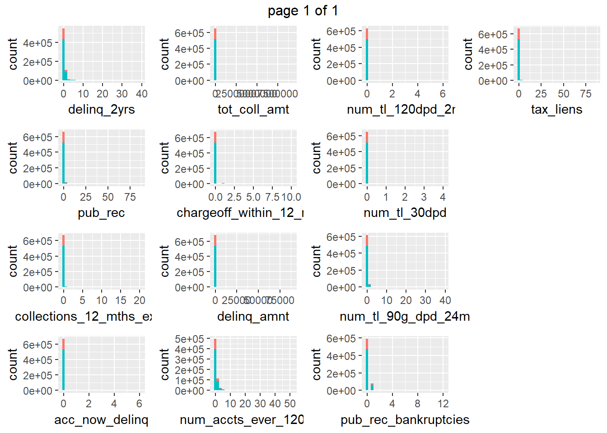
tbl.num[,c("Stat",IQR.List.n)]## Stat delinq_2yrs pub_rec collections_12_mths_ex_med acc_now_delinq
## 1 min 0 0 0 0
## 2 max 39 86 20 6
## 3 IQR% 0 0 0 0
## 4 MissingNum 0 0 0 0
## tot_coll_amt chargeoff_within_12_mths delinq_amnt num_accts_ever_120_pd
## 1 0 0 0 0
## 2 9152545 10 88216 51
## 3 0 0 0 0
## 4 27740 0 0 27740
## num_tl_120dpd_2m num_tl_30dpd num_tl_90g_dpd_24m pub_rec_bankruptcies
## 1 0 0 0 0
## 2 6 4 39 12
## 3 0 0 0 0
## 4 49269 27740 27740 0
## tax_liens
## 1 0
## 2 85
## 3 0
## 4 0Missing value in these feature with narrow distribution will be grouped as 1 and then the feature will be further disctritized by unique values, or outlier(values outside of 1.5sigma of Q3, or maximizing chi squared with dependant variables)
tbl.num[,c("Stat",IQR.List.n)]## Stat delinq_2yrs pub_rec collections_12_mths_ex_med acc_now_delinq
## 1 min 0 0 0 0
## 2 max 39 86 20 6
## 3 IQR% 0 0 0 0
## 4 MissingNum 0 0 0 0
## tot_coll_amt chargeoff_within_12_mths delinq_amnt num_accts_ever_120_pd
## 1 0 0 0 0
## 2 9152545 10 88216 51
## 3 0 0 0 0
## 4 27740 0 0 27740
## num_tl_120dpd_2m num_tl_30dpd num_tl_90g_dpd_24m pub_rec_bankruptcies
## 1 0 0 0 0
## 2 6 4 39 12
## 3 0 0 0 0
## 4 49269 27740 27740 0
## tax_liens
## 1 0
## 2 85
## 3 0
## 4 0imp_NumtoCat1 <- function(x){
x.imp <- ifelse(is.na(x),0,ifelse(x==0,1,2))
x.imp <-as.factor(x.imp)
return(x.imp)
}
imp_Median2 <- function(x){ #Impute with median
x.imp <- ifelse(is.na(x),median(x,na.rm = TRUE),x)
}
imp_NumtoCat3 <- function(x){ #discritized by quantile with missing as 1 level total 5 levels
q <- quantile(x,na.rm = TRUE,names = FALSE)
x.imp <- ifelse(is.na(x),1,ifelse(x<q[2],2,
ifelse(x<q[3]&x>=q[2],3,
ifelse(x>=q[3]&x<q[4],4,5))))
x.imp <-as.factor(x.imp)
return(x.imp)
}
imp_NumtoCat4 <- function(x){ #discritized by median with total 3 groups, where missing as 1 level.
q <- quantile(x,na.rm = TRUE,names = FALSE)
x.imp <- ifelse(is.na(x),1,ifelse(x<q[3],2,3))
x.imp <-as.factor(x.imp)
return(x.imp)
}
imp_NumtoCat5 <- function(x, p = 0.95){ #discritized by 0.95 with total 3 groups, where missing as 1 level.
if (p > 0.5) q <- quantile(x,probs = c(0,0.5,p,1),na.rm = TRUE,names = FALSE)
else q <- quantile(x,probs = c(0,p,0.5,1),na.rm = TRUE,names = FALSE)
x.imp <- ifelse(is.na(x),1,ifelse(x<q[2],2,ifelse(x<q[3]&x>=q[2],3,4)))
x.imp <-as.factor(x.imp)
return(x.imp)
}
imp_NumtoNeg999 <- function(x){ ##This method is to impute numeric missing value when using non-linear machine learning
x.imp <- ifelse(is.na(x),-999,x)
x.imp <-as.factor(x.imp)
return(x.imp)
}
imp_list <- tbl.num[,c(IQR.List.n)]
imp_list[,imp_list[4,]>0]%>%names()->imp_var1Note that for this kind of imputation, it doesn’t need to do it seperately for train and test sets. But it does matter when we impute the missing use median,mean or quantile. In order to be consistant, I will always keep them seperatly. A package in r named recipes is perfect for recording the preprocess in train and then Bake them into test at once. I will like to try that when I was given more time. Now it is time to look at the features with widest IQR%
my_hist(dat,IQR.List.w, n_col = 3)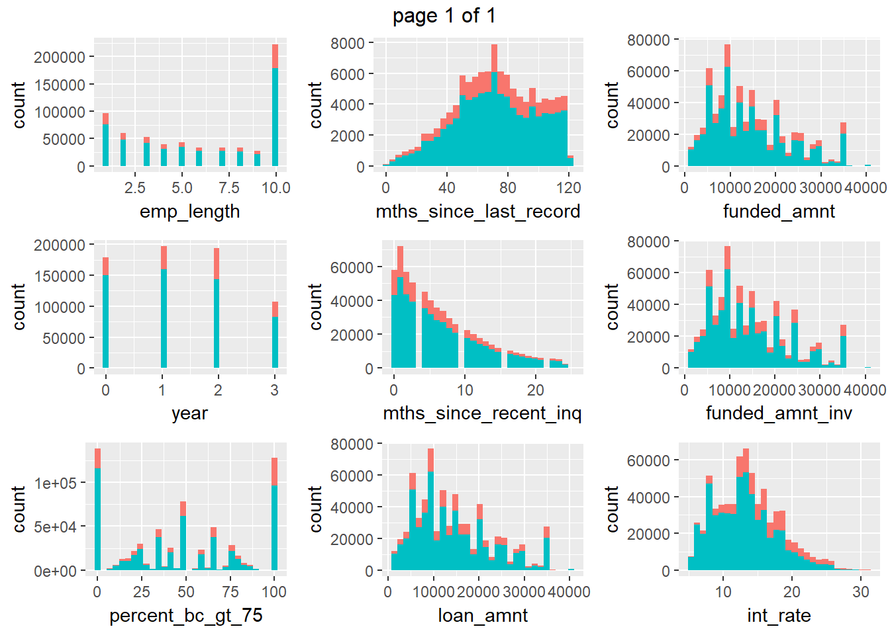
tbl.num[,c("Stat",IQR.List.w)]## Stat emp_length year percent_bc_gt_75 mths_since_last_record
## 1 min 1.00 0.00 0.0 0.00
## 2 max 10.00 3.00 100.0 121.00
## 3 IQR% 77.78 66.67 58.3 33.06
## 4 MissingNum 34922.00 0.00 14555.0 565804.00
## mths_since_recent_inq loan_amnt funded_amnt funded_amnt_inv int_rate
## 1 0 1000.00 1000.00 775.00 5.32
## 2 25 40000.00 40000.00 40000.00 30.99
## 3 32 30.77 30.77 30.59 24.70
## 4 68975 0.00 0.00 0.00 0.00imp_var2 <- c("emp_length","percent_bc_gt_75")#Impute with median
imp_var3 <-c("mths_since_last_record","mths_since_recent_inq")#impute by quantile with missing as 1 levelContinue to look at the next 9 widest distribution
my_hist(dat,IQR.List[10:18],n_col = 3)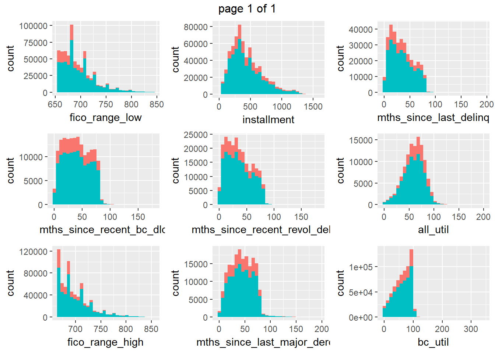
tbl.num[,c("Stat",IQR.List[10:18])]## Stat fico_range_low mths_since_recent_bc_dlq fico_range_high
## 1 min 660.00 0.00 664.00
## 2 max 845.00 176.00 850.00
## 3 IQR% 21.62 21.59 21.51
## 4 MissingNum 0.00 512784.00 0.00
## installment mths_since_recent_revol_delinq mths_since_last_major_derog
## 1 14.01 0 0.00
## 2 1584.90 180 192.00
## 3 20.63 20 18.23
## 4 0.00 446741 500398.00
## mths_since_last_delinq all_util bc_util
## 1 0.00 0.00 0.00
## 2 192.00 198.00 339.60
## 3 17.71 14.14 13.16
## 4 344562.00 562192.00 14724.00#Upate the imputation variable array based on first estimation
imp_var2 <-c(imp_var2,"all_util","bc_util")
imp_var4 <-c("mths_since_recent_bc_dlq","mths_since_recent_revol_delinq","mths_since_last_major_derog","mths_since_last_delinq") my_hist(dat,IQR.List[19:27],n_col = 3)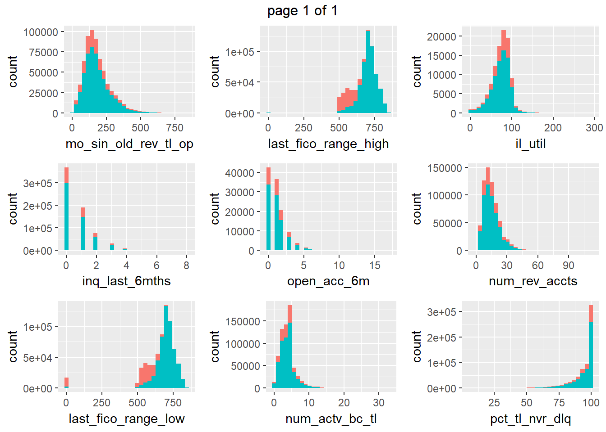
tbl.num[,c("Stat",IQR.List[19:27])]## Stat mo_sin_old_rev_tl_op inq_last_6mths last_fico_range_low
## 1 min 2.0 0.0 0.00
## 2 max 842.0 8.0 845.00
## 3 IQR% 13.1 12.5 11.83
## 4 MissingNum 27741.0 1.0 0.00
## last_fico_range_high open_acc_6m num_actv_bc_tl il_util num_rev_accts
## 1 0.00 0.00 0.00 0.00 0.00
## 2 850.00 17.00 33.00 291.00 112.00
## 3 11.76 11.76 9.09 8.93 8.93
## 4 0.00 562186.00 27740.00 576438.00 27741.00
## pct_tl_nvr_dlq
## 1 6.7
## 2 100.0
## 3 8.9
## 4 27875.0imp_var4 <-c(imp_var4,"mo_sin_old_rev_tl_op")
imp_var2 <- c(imp_var2,"inq_last_6mths","open_acc_6m","num_actv_bc_tl")
imp_var3 <- c(imp_var3,"il_util","num_rev_accts","pct_tl_nvr_dlq")my_hist(dat,IQR.List[28:36],n_col = 3)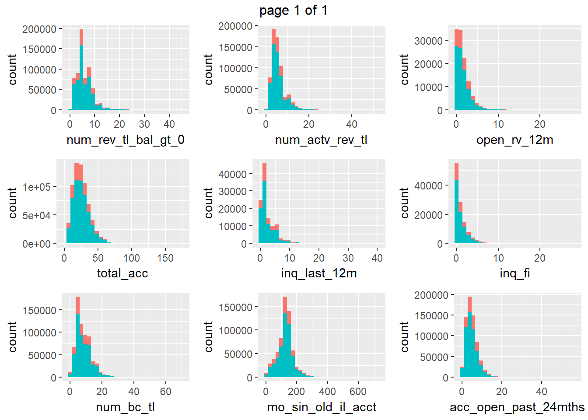
tbl.num[,c("Stat",IQR.List[28:36])]## Stat num_rev_tl_bal_gt_0 total_acc num_bc_tl num_actv_rev_tl
## 1 min 0.00 2.00 0.00 0.00
## 2 max 45.00 176.00 70.00 52.00
## 3 IQR% 8.89 8.62 8.57 7.69
## 4 MissingNum 27740.00 0.00 27740.00 27740.00
## inq_last_12m mo_sin_old_il_acct open_rv_12m inq_fi
## 1 0.0 0.00 0.00 0.00
## 2 40.0 724.00 28.00 28.00
## 3 7.5 7.46 7.14 7.14
## 4 562186.0 47101.00 562185.00 562185.00
## acc_open_past_24mths
## 1 0.00
## 2 56.00
## 3 7.14
## 4 7495.00#It is interesting that in the plot of num_actv_rev_tl, open_rv_12m,inq_fi,the number of charg off increases sharply for the right most extrem value. A new discretization and impuation for this would be, the right most 5% of the records will be in one level, missing value as 1. Rest of them will be catergorized by median. This kind of variables will be in imp_var5. The function is imp_NumtoCat5
imp_var5 <- c("num_actv_rev_tl","open_rv_12m","inq_fi")#extrem value
imp_var4 <-c(imp_var4,"num_rev_tl_bal_gt_0","mo_sin_old_il_acct")#by median
imp_var2 <- c(imp_var2,"inq_last_12m","num_bc_tl","acc_open_past_24mths")#Medianmy_hist(dat,IQR.List[37:45],n_col = 3)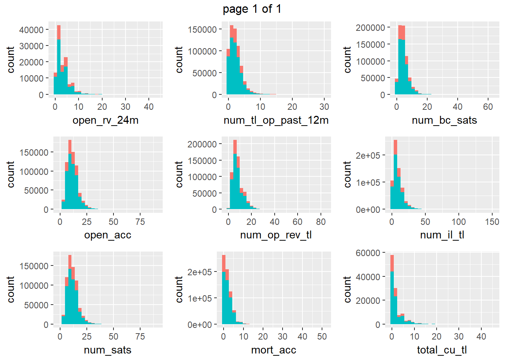
tbl.num[,c("Stat",IQR.List[37:45])]## Stat open_rv_24m open_acc num_sats num_tl_op_past_12m
## 1 min 0.00 0.00 0.00 0.00
## 2 max 43.00 90.00 90.00 30.00
## 3 IQR% 6.98 6.67 6.67 6.67
## 4 MissingNum 562185.00 0.00 16055.00 27740.00
## num_op_rev_tl mort_acc num_bc_sats num_il_tl total_cu_tl
## 1 0.00 0.00 0.00 0.00 0.00
## 2 83.00 51.00 63.00 150.00 45.00
## 3 6.02 5.88 4.76 4.67 4.44
## 4 27740.00 7495.00 16055.00 27740.00 562186.00imp_var5 <- c(imp_var5,"open_rv_24m","num_il_tl","total_cu_tl","num_bc_sats")
imp_var2 <- c(imp_var2,"num_sats","num_tl_op_past_12m","num_op_rev_tl","mort_acc")my_hist(dat,IQR.List[46:54],n_col = 3)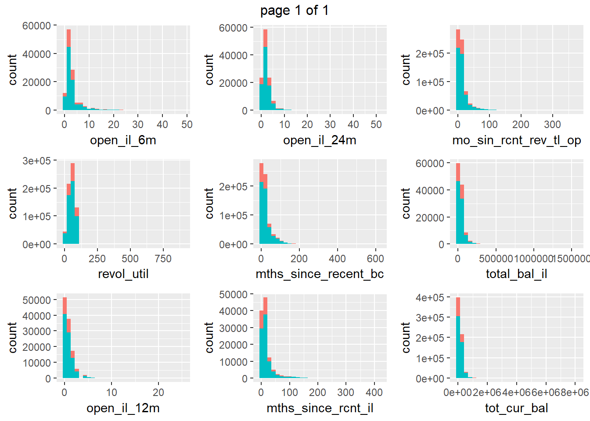
tbl.num[,c("Stat",IQR.List[46:54])]## Stat open_il_6m revol_util open_il_12m open_il_24m
## 1 min 0.00 0.00 0 0.00
## 2 max 48.00 892.30 25 51.00
## 3 IQR% 4.17 4.06 4 3.92
## 4 MissingNum 562185.00 382.00 562185 562185.00
## mths_since_recent_bc mths_since_rcnt_il mo_sin_rcnt_rev_tl_op
## 1 0.00 0.00 0.00
## 2 616.00 415.00 372.00
## 3 3.57 3.37 2.96
## 4 13767.00 564698.00 27741.00
## total_bal_il tot_cur_bal
## 1 0.00 0.00
## 2 1547285.00 8000078.00
## 3 2.41 2.25
## 4 562185.00 27740.00imp_var5 <- c(imp_var5,"open_il_6m","open_il_24m","mo_sin_rcnt_rev_tl_op")
imp_var2 <- c(imp_var2,"revol_util","open_il_12m","total_bal_il","tot_cur_bal")
imp_var3 <- c(imp_var3,"mths_since_recent_bc","mths_since_rcnt_il")my_hist(dat,IQR.List[55:63],n_col = 3)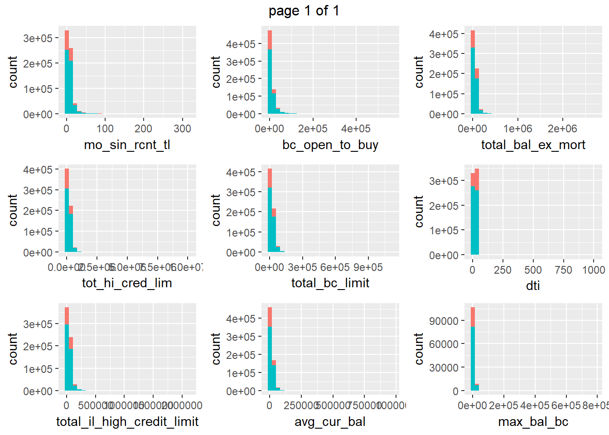
tbl.num[,c("Stat",IQR.List[55:63])]## Stat mo_sin_rcnt_tl tot_hi_cred_lim total_il_high_credit_limit
## 1 min 0.00 0 0.00
## 2 max 314.00 9999999 2101913.00
## 3 IQR% 2.23 2 1.93
## 4 MissingNum 27740.00 27740 27740.00
## bc_open_to_buy total_bc_limit avg_cur_bal total_bal_ex_mort dti
## 1 0.00 0.00 0.00 0.00 -1.0
## 2 559912.00 1105500.00 958084.00 2688920.00 999.0
## 3 1.75 1.75 1.64 1.49 1.2
## 4 14301.00 7495.00 27752.00 7495.00 12.0
## max_bal_bc
## 1 0.00
## 2 776843.00
## 3 0.65
## 4 562185.00imp_var5 <- c(imp_var5,"mo_sin_rcnt_tl","total_il_high_credit_limit")
imp_var3 <- c(imp_var3,"tot_hi_cred_lim","bc_open_to_buy")
imp_var4 <- c(imp_var4,"total_bc_limit","avg_cur_bal","total_bal_ex_mort","max_bal_bc")
imp_var2 <- c(imp_var2,"dti")my_hist(dat,IQR.List[64:67],n_col = 2)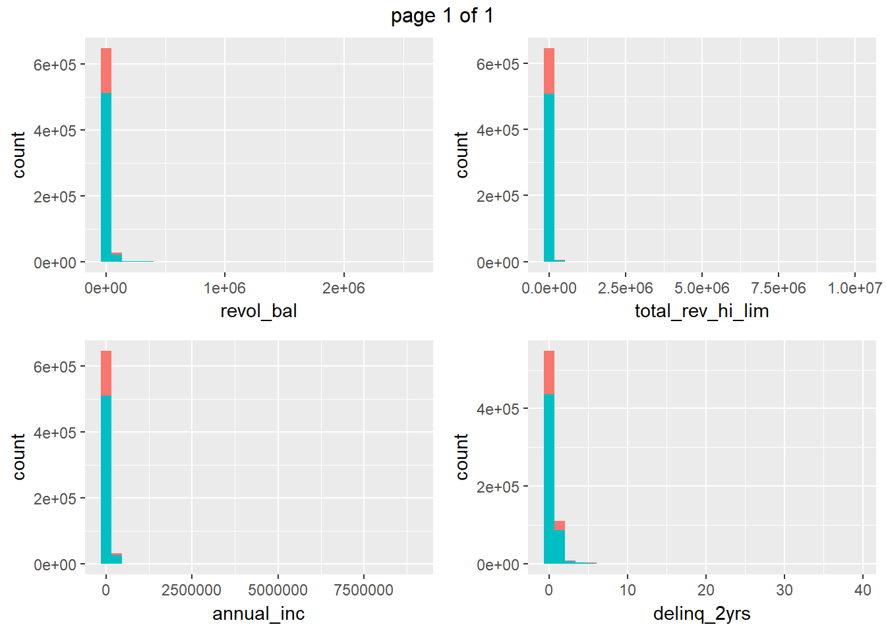
tbl.num[,c("Stat",IQR.List[64:67])]## Stat revol_bal annual_inc total_rev_hi_lim delinq_2yrs
## 1 min 0.00 0.0 0.00 0
## 2 max 2568995.00 8900060.0 9999999.00 39
## 3 IQR% 0.53 0.5 0.25 0
## 4 MissingNum 0.00 0.0 27740.00 0imp_var4 <- c(imp_var4,"total_rev_hi_lim")Up to now, we have a strategy for all numeric variables, features in imp_var1,3,4 and 5 will be categorical, so the numeric variables will be:
var.keep.num <- names(tbl.num)[!names(tbl.num)%in% c(imp_var1,imp_var3,imp_var4,imp_var5,"y","Stat")]
length(var.keep.num)## [1] 412.3.2 Imputation Missing Value and Feature Engineering for Categorical Variables
dat.cat <- dat[,!names(dat)%in% c(d.time,names(tbl.num),"loan_status","y","id")]
names(dat.cat)## [1] "term" "grade" "sub_grade"
## [4] "emp_title" "home_ownership" "verification_status"
## [7] "purpose" "title" "zip_code"
## [10] "addr_state" "initial_list_status" "application_type"
## [13] "desc_flag" "joint_flag" "ZIP3"dat.cat %>% sapply(function(x)length(unique(x))) %>% as.data.frame() -> tbl.cat
names(tbl.cat) <- "levels"
tbl.cat$MissingNum <-sapply(dat.cat,function(x)sum(is.na(x)))
kable(tbl.cat,"html")| levels | MissingNum | |
|---|---|---|
| term | 2 | 0 |
| grade | 7 | 0 |
| sub_grade | 35 | 0 |
| emp_title | 238466 | 39767 |
| home_ownership | 6 | 0 |
| verification_status | 3 | 0 |
| purpose | 14 | 0 |
| title | 44348 | 6278 |
| zip_code | 918 | 0 |
| addr_state | 51 | 0 |
| initial_list_status | 2 | 0 |
| application_type | 4 | 0 |
| desc_flag | 2 | 0 |
| joint_flag | 2 | 0 |
| ZIP3 | 918 | 0 |
#for levels less than 35(levels of subgrade), we can plot the frequency directly While for high cardality features, we plot the first 20 most frequent levels.
cat.list.s <- rownames(tbl.cat[tbl.cat$levels<36,])
cat.list.l <- rownames(tbl.cat[tbl.cat$levels>35,])
my_hist_cat(dat,cat.list.s,n_col=3)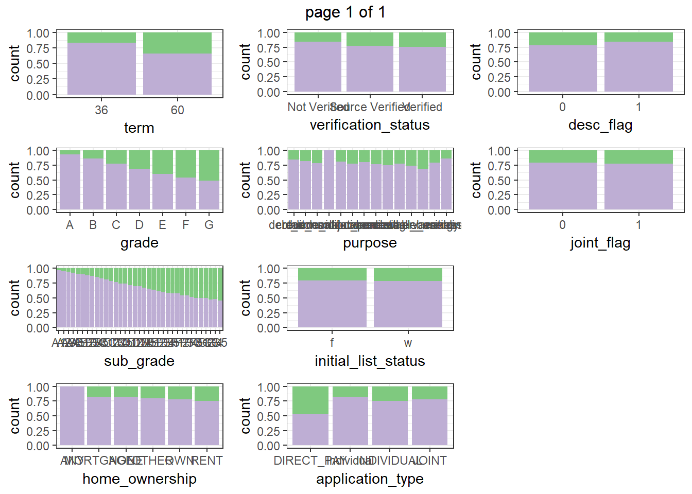
#Grade and subgrade are two variables that strongly related to the final loan status. Note that all figuers with loan status are in percentile.Now take a look at those nomial variables with high cardinality one by one. ####addr_state We use googlevis to plot the charged off off rate in each state. In terms of encoding, If we use one-hot encoding for the state, we need 50 nomial variables to represent, which is not a bad idea when running under desired enviroment. However, using a pc with only 6gb RAM, size of the data is a major concern. Therefore, I will use mean encoder for the state.
dt <- data.table(dat)[,{temp = .N; bct = sum(loan_status == "Charged Off");pct = bct/temp;list(Charge.off.Rate = pct)},by = addr_state]library(googleVis)
op <- options(gvis.plot.tag='chart')
GeoStates <- gvisGeoChart(dt, "addr_state", "Charge.off.Rate",
options=list(region="US",
displayMode="regions",
resolution="provinces",
width=600, height=400))
plot(GeoStates)## <!-- GeoChart generated in R 3.4.2 by googleVis 0.6.2 package -->
## <!-- Fri Jan 26 01:05:25 2018 -->
##
##
## <!-- jsHeader -->
## <script type="text/javascript">
##
## // jsData
## function gvisDataGeoChartID1e4c39c65025 () {
## var data = new google.visualization.DataTable();
## var datajson =
## [
## [
## "MA",
## 0.1982860133
## ],
## [
## "NY",
## 0.2316984427
## ],
## [
## "CA",
## 0.1992717835
## ],
## [
## "CO",
## 0.161099173
## ],
## [
## "NM",
## 0.2260133402
## ],
## [
## "FL",
## 0.2247500424
## ],
## [
## "MI",
## 0.2114019647
## ],
## [
## "NC",
## 0.2191255698
## ],
## [
## "TX",
## 0.2043116836
## ],
## [
## "CT",
## 0.189298227
## ],
## [
## "GA",
## 0.1923112638
## ],
## [
## "OH",
## 0.2294894124
## ],
## [
## "IN",
## 0.2277995887
## ],
## [
## "NJ",
## 0.2184395994
## ],
## [
## "DE",
## 0.2153344209
## ],
## [
## "SC",
## 0.1766143555
## ],
## [
## "PA",
## 0.2191572546
## ],
## [
## "UT",
## 0.1817511521
## ],
## [
## "MO",
## 0.2221803093
## ],
## [
## "WI",
## 0.1799976982
## ],
## [
## "IL",
## 0.1962792888
## ],
## [
## "WA",
## 0.1684686456
## ],
## [
## "MD",
## 0.2156057495
## ],
## [
## "VA",
## 0.213421454
## ],
## [
## "MN",
## 0.2149946682
## ],
## [
## "WY",
## 0.1863636364
## ],
## [
## "KY",
## 0.2192555364
## ],
## [
## "TN",
## 0.2344978601
## ],
## [
## "AZ",
## 0.2033619587
## ],
## [
## "NV",
## 0.2362050377
## ],
## [
## "NH",
## 0.1419910657
## ],
## [
## "KS",
## 0.1727649292
## ],
## [
## "AL",
## 0.2576644044
## ],
## [
## "RI",
## 0.1995116847
## ],
## [
## "WV",
## 0.1846314325
## ],
## [
## "LA",
## 0.2407917815
## ],
## [
## "OR",
## 0.1556446991
## ],
## [
## "VT",
## 0.1474654378
## ],
## [
## "AR",
## 0.2511727912
## ],
## [
## "OK",
## 0.2508159269
## ],
## [
## "MT",
## 0.1758186398
## ],
## [
## "HI",
## 0.2060287611
## ],
## [
## "SD",
## 0.2317927171
## ],
## [
## "AK",
## 0.2097588334
## ],
## [
## "DC",
## 0.1338753388
## ],
## [
## "NE",
## 0.2702970297
## ],
## [
## "IA",
## 0.5
## ],
## [
## "MS",
## 0.2824567856
## ],
## [
## "ID",
## 0.2037617555
## ],
## [
## "ME",
## 0.1449579832
## ],
## [
## "ND",
## 0.2558139535
## ]
## ];
## data.addColumn('string','addr_state');
## data.addColumn('number','Charge.off.Rate');
## data.addRows(datajson);
## return(data);
## }
##
## // jsDrawChart
## function drawChartGeoChartID1e4c39c65025() {
## var data = gvisDataGeoChartID1e4c39c65025();
## var options = {};
## options["width"] = 600;
## options["height"] = 400;
## options["region"] = "US";
## options["displayMode"] = "regions";
## options["resolution"] = "provinces";
##
##
## var chart = new google.visualization.GeoChart(
## document.getElementById('GeoChartID1e4c39c65025')
## );
## chart.draw(data,options);
##
##
## }
##
##
## // jsDisplayChart
## (function() {
## var pkgs = window.__gvisPackages = window.__gvisPackages || [];
## var callbacks = window.__gvisCallbacks = window.__gvisCallbacks || [];
## var chartid = "geochart";
##
## // Manually see if chartid is in pkgs (not all browsers support Array.indexOf)
## var i, newPackage = true;
## for (i = 0; newPackage && i < pkgs.length; i++) {
## if (pkgs[i] === chartid)
## newPackage = false;
## }
## if (newPackage)
## pkgs.push(chartid);
##
## // Add the drawChart function to the global list of callbacks
## callbacks.push(drawChartGeoChartID1e4c39c65025);
## })();
## function displayChartGeoChartID1e4c39c65025() {
## var pkgs = window.__gvisPackages = window.__gvisPackages || [];
## var callbacks = window.__gvisCallbacks = window.__gvisCallbacks || [];
## window.clearTimeout(window.__gvisLoad);
## // The timeout is set to 100 because otherwise the container div we are
## // targeting might not be part of the document yet
## window.__gvisLoad = setTimeout(function() {
## var pkgCount = pkgs.length;
## google.load("visualization", "1", { packages:pkgs, callback: function() {
## if (pkgCount != pkgs.length) {
## // Race condition where another setTimeout call snuck in after us; if
## // that call added a package, we must not shift its callback
## return;
## }
## while (callbacks.length > 0)
## callbacks.shift()();
## } });
## }, 100);
## }
##
## // jsFooter
## </script>
##
## <!-- jsChart -->
## <script type="text/javascript" src="https://www.google.com/jsapi?callback=displayChartGeoChartID1e4c39c65025"></script>
##
## <!-- divChart -->
##
## <div id="GeoChartID1e4c39c65025"
## style="width: 600; height: 400;">
## </div>Mean encoding function for high cardinality nomial variables.
###charged off rate sample mean (This need to be calculted in train set only.)
my_MeanEncoding <- function(df,var,k=2,f=1,test.df=NULL){
data.table(df)[year < 3][,
{mean_p = sum(y);
total=.N;
mean_p=mean_p/total;
list(mean_p=mean_p,
var_key=get(var),
y = y)}][
,{temp = .N;
bct = sum(y);
pct = bct/temp;
var_mean = mean_p/(1+exp((temp-k)/f)) + pct *(1-1/(1+exp((temp-k)/f)));
list(var_mean = var_mean,mean_p = mean_p,tot=temp,var = var_key)},by = var_key]-> dt_mean_tr
if(is.null(test.df)){ test.df = data.table(df)[year < 3]}
require(dplyr)
require(tidyr)
require(NLP)
mean_p_forna = dt_mean_tr$mean_p[1]
lookup <- unique(dt_mean_tr)
test.df %>%
mutate(var_key = get(var))%>%
left_join(lookup, by = "var_key") %>%
mutate_at("var_mean",funs(ifelse(is.na(.),mean_p_forna,.)))->dt_mean_te
return(dt_mean_te[,"var_mean"])
}2.3.2.1 ZIP3 and emp_title
Trim.Cap function to trim all the empty spaces before and after the charactor and then capitalized them all.
#Apply mean encoding to ZIP3 and emp_title as well.
#before mean encoding,
Trim.Cap <- function(x) {
x <- as.character(x)
x <- trimws(x)
x <- toupper(x)
return(x)
}
dat$emp_title <- Trim.Cap(dat$emp_title)2.3.2.2 title
Title is where the borrowers gives a name to the lending application. Some text mining can be tried in the future, but I will drop this feature for now. It is the loan title provided by the borrower.
dat <- data.table(dat)[,title := Trim.Cap(title)]
length(unique(dat$title))## [1] 35309There are 35309 different title that borrowers named their loan. Lets look at the 20 most frequent used ones.
title_list = plyr::count(dat$title)%>%arrange(-freq)%>%head(20)%>%arrange(x)
p <- dat %>%
filter(title %in% title_list[[1]]) %>%
ggplot(aes(title,fill=loan_status))+
geom_bar(alpha=0.8)+
scale_x_discrete(labels = function(x)str_wrap(x, width = 20))+
theme(axis.text.x=element_text(angle=45,hjust=1,vjust=0.5,size = 5))
ggplotly(p)dat <- data.table(dat)[,title:=NULL]2.4 Compute relevance between <i.v, d.v.>
2.4.1 Exisiting Numeric Variables
Mutual information Calculation
#to compute relevance between numeric variables and DV, I use mutual information, which is perfect for continous IV and nomial DV
my_MICal <- function(df,var){
datalist = list()
j =1
require(entropy)
require(NLP)
for (i in var){
#Calculate joint distribution for IV and DV
data.table(df)[year<3][
,total := .N][
,{temp0 = .N;
temp1 = sum(y)/total;
temp0 = temp0/total-temp1;
list(pct0 = temp0, pct1 = temp1)},by = get(i)]%>%
na.omit(.) ->dt
dt <- dt[!duplicated(dt[,as.String(i)])]
MI <-mi.plugin(dt[,2:3])
datalist[[j]] <- c(as.String(i),MI)
j =j+1
}
MI = do.call(rbind, datalist)
#Sort them in descending order
MI.tbl <- MI %>% as.data.frame(.)%>%
mutate_at("V2",funs(as.numeric(as.character(.))))%>%
arrange(-V2)
return(MI.tbl)
}
my_MICal(dat,var.keep.num) %>% head(20)## V1 V2
## 1 last_fico_range_high 0.207397328
## 2 last_fico_range_low 0.207163217
## 3 tot_cur_bal 0.161027652
## 4 installment 0.030370518
## 5 int_rate 0.029750534
## 6 revol_bal 0.022286208
## 7 all_util 0.009886439
## 8 dti 0.007218558
## 9 total_bal_il 0.006984252
## 10 year 0.005431646
## 11 fico_range_low 0.004379458
## 12 fico_range_high 0.004379458
## 13 percent_bc_gt_75 0.003996801
## 14 bc_util 0.003088509
## 15 acc_open_past_24mths 0.002966398
## 16 num_tl_op_past_12m 0.002541873
## 17 inq_last_12m 0.002478204
## 18 revol_util 0.002171781
## 19 annual_inc 0.001791833
## 20 loan_amnt 0.001752224#last_fico_range_hig,last_fico_range_low,tot_cur_bal are higher than 0.15, which are quite strong indicators for loa status.impute missing values in continous variables based on previous analysis
dat<-as.data.frame(dat)
dat.train.imp2 <- dat[dat$year<3,imp_var2] %>%
mutate_all(imp_Median2)
#Same apply to test set
dat.test.imp2 <- dat[dat$year==3,imp_var2] %>%
mutate_all(imp_Median2)
#Imputate other numerical variables to nomial variables
dat.train.imp1 <- dat[dat$year<3,imp_var1]%>%
mutate_all(imp_NumtoCat1)
dat.train.imp3 <- dat[dat$year<3,imp_var3] %>%
mutate_all(imp_NumtoCat3)
dat.train.imp4 <- dat[dat$year<3,imp_var4] %>%
mutate_all(imp_NumtoCat4)
dat.train.imp5 <- dat[dat$year<3,imp_var5] %>%
mutate_all(imp_NumtoCat5)
dat.train.imp <- cbind(dat.train.imp1,dat.train.imp3,dat.train.imp4,dat.train.imp5)
dat.test.imp1 <- dat[dat$year==3,imp_var1] %>%
mutate_all(imp_NumtoCat1)
dat.test.imp3 <- dat[dat$year==3,imp_var3] %>%
mutate_all(imp_NumtoCat3)
dat.test.imp4 <- dat[dat$year==3,imp_var4] %>%
mutate_all(imp_NumtoCat4)
dat.test.imp5 <- dat[dat$year==3,imp_var5] %>%
mutate_all(imp_NumtoCat5)
dat.test.imp <- cbind(dat.test.imp1,dat.test.imp3,dat.test.imp4,dat.test.imp5)2.4.2 New Continous Variables
In this section, we will take a look at the MI between imputed continous variables from high-cardinality nomial variables, includig emp_title,ZIP3 and addr_state
cat.list.l## [1] "emp_title" "title" "zip_code" "addr_state" "ZIP3"emp_title_mean <- my_MeanEncoding(dat,var="emp_title")
ZIP3_mean <- my_MeanEncoding(dat,var="ZIP3")
state_mean <- my_MeanEncoding(dat,var="addr_state")
###Prepare these mean encoding in test features.
dat.test <- data.table(dat)[year==3]
emp_title_mean.ts <-my_MeanEncoding(dat,var="emp_title",test.df =dat.test)
ZIP3_mean.ts <-my_MeanEncoding(dat,var="ZIP3",test.df =dat.test)
state_mean.ts <-my_MeanEncoding(dat,var="addr_state",test.df =dat.test)
my_MICal(dat,c("ZIP3_mean","emp_title_mean","state_mean"))## V1 V2
## 1 emp_title_mean 0.2027328342
## 2 ZIP3_mean 0.0024369657
## 3 state_mean 0.0007213942var.drop <- c("emp_title","ZIP3","addr_state","zip_code","title")It shows the MI scores that emp_title_mean plays a important role, while state doesn’t. It seems that bad loan is not varied too much geologically. ### Exsisting Categorical Variables
my_MICal(dat,cat.list.s)## V1 V2
## 1 sub_grade 2.301481e-02
## 2 grade 2.192099e-02
## 3 term 8.251958e-03
## 4 verification_status 4.034040e-03
## 5 application_type 3.782531e-03
## 6 home_ownership 2.337330e-03
## 7 purpose 6.195969e-04
## 8 desc_flag 3.427830e-04
## 9 initial_list_status 1.048890e-04
## 10 joint_flag 2.524826e-092.4.3 New Categorical Variables
#Adding two variables in order to calculate MI
dat.train.imp$year <- dat[dat$year<3,"year"]
dat.train.imp$y <- dat[dat$year<3,"y"]#Add this at last
my_MICal(dat.train.imp,names(dat.train.imp)[1:(length(dat.train.imp)-2)])%>%head(20)
#It seems that after imputation those new nomial variables are not very strong indicator. 2.5 Evaluate relevance between selected i.v.
let’s look at the correlation between numeric variables
res <- cor(dat[dat$year<3,names(dat)%in%var.keep.num&!names(dat)=="year"],use = "complete.obs")
require(corrplot)
corrplot(res[1:length(var.keep.num)-1,1:length(var.keep.num)-1], type = "upper", order = "hclust",
tl.col = "black", tl.srt = 45)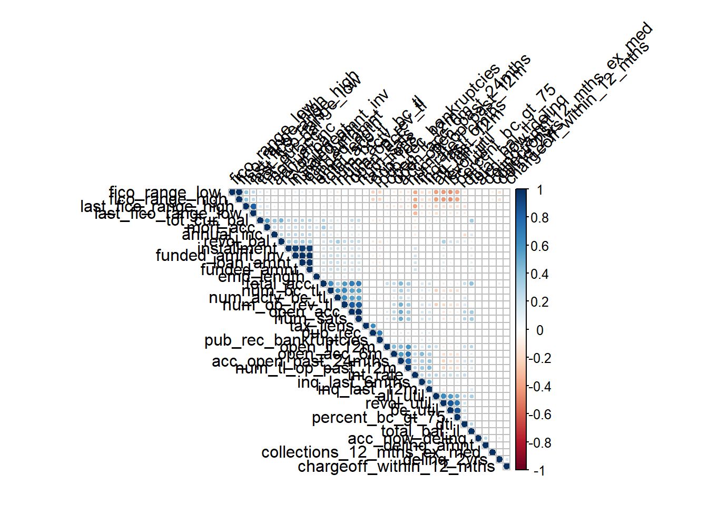 ##Date Time Variable analysis There are three variables are in date time format.
d.time## [1] "issue_d" "earliest_cr_line" "last_credit_pull_d"2.5.1 issue_d
dt0 <- data.table(dat)[,issue_d_new := mdy(issue_d)]
dt0 %>% ggplot(aes(x=issue_d_new,color = loan_status))+facet_grid(loan_status~.,scales = "free")+
geom_freqpoly(bins=60,size = 1, alpha = 0.8)->p
ggplotly(p)2.5.2 earliest_cr_line and last_credit_pull_d
require(zoo)
temp <- as.yearmon(dat$earliest_cr_line,"%b-%Y")
dat <- dat%>%mutate(ecl.mon=month(temp),ecl.year= year(temp))
temp <- as.yearmon(dat$last_credit_pull_d,"%b-%Y")
dat <- dat%>%mutate(lcl.mon=ifelse(is.na(month(temp)),0,month(temp)),lcl.year=ifelse(is.na(year(temp)),0,year(temp)))
var.drop <- c(var.drop,"last_credit_pull_d","earliest_cr_line","issue_d")2.6 Final Model data Preparation
In this section, data for modeling is prepared by replacing imputed data fields into the existing, dropping features that are not used.
dat.train.imp <- cbind(dat.train.imp,dat.train.imp2)
dat.train<-dat %>% filter(year<3)%>%
select(which(!names(.)%in% c(names(dat.train.imp),var.drop)))%>%
cbind(.,dat.train.imp)
#dat.train <-data.table(dat)[year<3]
dat.train$ZIP3_mean <-ZIP3_mean
dat.train$emp_title_mean <-emp_title_mean
dat.train$state_mean <-state_mean
dat.train <- data.table(dat.train)[,c("id","loan_status") := NULL]
dat.train <- dat.train %>% select(y, everything()) %>%
mutate_at("y",funs(as.factor(.)))#move DV to the first
#dat.train <-as.data.frame(unclass(dat.train))
##Check any na in the data set
sum(is.na(dat.train))## [1] 0str(dat.train)## 'data.frame': 570081 obs. of 97 variables:
## $ y : Factor w/ 2 levels "0","1": 1 1 1 1 1 2 1 1 1 1 ...
## $ loan_amnt : int 10000 20800 7550 28000 12000 27600 11100 12000 9750 3000 ...
## $ funded_amnt : int 10000 20800 7550 28000 12000 27600 11100 12000 9750 3000 ...
## $ funded_amnt_inv : num 10000 20800 7550 28000 12000 27600 11100 12000 9750 3000 ...
## $ term : Factor w/ 2 levels "36","60": 1 1 1 1 1 2 1 1 1 1 ...
## $ int_rate : num 9.67 13.53 16.24 7.62 11.99 ...
## $ installment : num 321 706 266 873 399 ...
## $ grade : Factor w/ 7 levels "A","B","C","D",..: 2 2 3 1 2 4 3 2 3 2 ...
## $ sub_grade : Factor w/ 35 levels "A1","A2","A3",..: 6 10 15 3 8 20 13 10 11 9 ...
## $ home_ownership : Factor w/ 6 levels "ANY","MORTGAGE",..: 2 6 6 2 2 2 2 6 6 6 ...
## $ annual_inc : num 102000 81500 28000 325000 130000 73000 90000 40000 26000 25000 ...
## $ verification_status : Factor w/ 3 levels "Not Verified",..: 1 3 1 2 2 2 1 2 1 3 ...
## $ purpose : Factor w/ 14 levels "car","credit_card",..: 3 3 3 3 3 3 10 3 3 3 ...
## $ delinq_2yrs : int 2 0 0 0 0 1 1 0 0 0 ...
## $ fico_range_low : int 670 685 660 745 715 665 690 660 670 660 ...
## $ fico_range_high : int 674 689 664 749 719 669 694 664 674 664 ...
## $ open_acc : int 9 29 4 15 9 10 9 7 12 5 ...
## $ pub_rec : int 0 0 0 0 0 0 0 2 0 2 ...
## $ revol_bal : int 9912 23473 5759 29581 10805 27003 6619 5572 7967 2875 ...
## $ total_acc : int 22 41 5 31 19 24 12 32 28 26 ...
## $ initial_list_status : Factor w/ 2 levels "f","w": 1 1 2 2 1 1 1 2 1 1 ...
## $ last_fico_range_high : int 629 629 599 789 724 579 724 739 689 569 ...
## $ last_fico_range_low : int 625 625 595 785 720 575 720 735 685 565 ...
## $ collections_12_mths_ex_med : int 0 0 0 0 0 0 0 0 0 0 ...
## $ application_type : Factor w/ 4 levels "DIRECT_PAY","Individual",..: 2 2 2 2 2 2 2 2 2 2 ...
## $ acc_now_delinq : int 0 0 0 0 0 0 0 0 0 0 ...
## $ chargeoff_within_12_mths : int 0 0 0 0 0 1 0 0 0 0 ...
## $ delinq_amnt : int 0 0 0 0 0 0 0 0 0 0 ...
## $ pub_rec_bankruptcies : int 0 0 0 0 0 0 0 0 0 2 ...
## $ tax_liens : int 0 0 0 0 0 0 0 0 0 0 ...
## $ year : int 0 0 0 0 0 0 0 0 0 0 ...
## $ desc_flag : Factor w/ 2 levels "0","1": 1 2 1 1 1 2 1 1 2 1 ...
## $ joint_flag : Factor w/ 2 levels "0","1": 1 1 1 1 1 1 1 1 1 1 ...
## $ ecl.mon : num 10 6 10 11 11 6 6 10 1 5 ...
## $ ecl.year : num 1989 1998 2010 1994 1997 ...
## $ lcl.mon : num 12 10 10 8 10 10 8 7 10 10 ...
## $ lcl.year : num 2016 2017 2017 2014 2017 ...
## $ tot_coll_amt : Factor w/ 3 levels "0","1","2": 2 2 2 2 2 2 2 3 2 3 ...
## $ num_accts_ever_120_pd : Factor w/ 3 levels "0","1","2": 3 3 2 2 2 3 3 3 2 3 ...
## $ num_tl_120dpd_2m : Factor w/ 3 levels "0","1","2": 2 2 2 2 1 2 2 2 2 2 ...
## $ num_tl_30dpd : Factor w/ 3 levels "0","1","2": 2 2 2 2 2 2 2 2 2 2 ...
## $ num_tl_90g_dpd_24m : Factor w/ 3 levels "0","1","2": 2 2 2 2 2 3 3 2 2 2 ...
## $ mths_since_last_record : Factor w/ 5 levels "1","2","3","4",..: 1 1 1 1 1 1 1 2 1 3 ...
## $ mths_since_recent_inq : Factor w/ 5 levels "1","2","3","4",..: 4 2 5 3 3 4 5 5 5 4 ...
## $ il_util : Factor w/ 5 levels "1","2","3","4",..: 1 1 1 1 1 1 1 1 1 1 ...
## $ num_rev_accts : Factor w/ 5 levels "1","2","3","4",..: 3 5 2 4 2 4 3 5 5 3 ...
## $ pct_tl_nvr_dlq : Factor w/ 4 levels "1","2","3","5": 2 2 4 4 4 2 2 2 4 2 ...
## $ mths_since_recent_bc : Factor w/ 5 levels "1","2","3","4",..: 4 2 4 2 5 2 3 3 3 4 ...
## $ mths_since_rcnt_il : Factor w/ 5 levels "1","2","3","4",..: 1 1 1 1 1 1 1 1 1 1 ...
## $ tot_hi_cred_lim : Factor w/ 5 levels "1","2","3","4",..: 3 2 2 5 5 5 5 2 2 2 ...
## $ bc_open_to_buy : Factor w/ 5 levels "1","2","3","4",..: 2 4 2 5 3 4 2 3 3 3 ...
## $ mths_since_recent_bc_dlq : Factor w/ 3 levels "1","2","3": 2 3 1 1 1 2 2 3 1 3 ...
## $ mths_since_recent_revol_delinq: Factor w/ 3 levels "1","2","3": 2 3 1 1 1 2 3 3 1 3 ...
## $ mths_since_last_major_derog : Factor w/ 3 levels "1","2","3": 3 3 1 1 1 2 2 3 1 3 ...
## $ mths_since_last_delinq : Factor w/ 3 levels "1","2","3": 2 3 1 1 1 2 2 3 1 3 ...
## $ mo_sin_old_rev_tl_op : Factor w/ 3 levels "1","2","3": 3 3 2 3 3 3 2 3 2 3 ...
## $ num_rev_tl_bal_gt_0 : Factor w/ 3 levels "1","2","3": 2 3 2 3 3 3 3 2 3 2 ...
## $ mo_sin_old_il_acct : Factor w/ 3 levels "1","2","3": 3 2 1 2 3 3 1 2 2 3 ...
## $ total_bc_limit : Factor w/ 3 levels "1","2","3": 2 3 2 3 2 3 2 2 2 2 ...
## $ avg_cur_bal : Factor w/ 3 levels "1","2","3": 2 2 2 3 3 3 3 2 2 2 ...
## $ total_bal_ex_mort : Factor w/ 3 levels "1","2","3": 3 2 2 3 3 3 2 2 2 2 ...
## $ max_bal_bc : Factor w/ 3 levels "1","2","3": 1 1 1 1 1 1 1 1 1 1 ...
## $ total_rev_hi_lim : Factor w/ 3 levels "1","2","3": 2 3 2 3 2 3 2 2 2 2 ...
## $ num_actv_rev_tl : Factor w/ 4 levels "1","2","3","4": 2 4 2 3 3 3 3 2 3 2 ...
## $ open_rv_12m : Factor w/ 4 levels "1","2","3","4": 1 1 1 1 1 1 1 1 1 1 ...
## $ inq_fi : Factor w/ 4 levels "1","2","3","4": 1 1 1 1 1 1 1 1 1 1 ...
## $ open_rv_24m : Factor w/ 4 levels "1","2","3","4": 1 1 1 1 1 1 1 1 1 1 ...
## $ num_il_tl : Factor w/ 4 levels "1","2","3","4": 3 2 2 3 3 2 2 3 3 3 ...
## $ total_cu_tl : Factor w/ 3 levels "1","3","4": 1 1 1 1 1 1 1 1 1 1 ...
## $ num_bc_sats : Factor w/ 4 levels "1","2","3","4": 2 4 2 3 3 3 3 2 3 2 ...
## $ open_il_6m : Factor w/ 4 levels "1","2","3","4": 1 1 1 1 1 1 1 1 1 1 ...
## $ open_il_24m : Factor w/ 4 levels "1","2","3","4": 1 1 1 1 1 1 1 1 1 1 ...
## $ mo_sin_rcnt_rev_tl_op : Factor w/ 4 levels "1","2","3","4": 3 2 3 2 2 2 3 2 3 2 ...
## $ mo_sin_rcnt_tl : Factor w/ 4 levels "1","2","3","4": 3 2 3 2 2 2 3 2 3 3 ...
## $ total_il_high_credit_limit : Factor w/ 4 levels "1","2","3","4": 3 2 2 4 3 2 2 2 2 2 ...
## $ emp_length : num 7 10 3 5 10 6 10 10 1 10 ...
## $ percent_bc_gt_75 : num 66.7 50 100 16.7 1 80 50 33.3 66.7 66.7 ...
## $ all_util : num 62 62 62 62 62 62 62 62 62 62 ...
## $ bc_util : num 89.4 54.6 96 67.1 93 74.7 74.6 79.6 75.7 52.3 ...
## $ inq_last_6mths : int 0 2 0 1 1 1 0 0 0 0 ...
## $ open_acc_6m : num 1 1 1 1 1 1 1 1 1 1 ...
## $ num_actv_bc_tl : int 3 8 2 4 3 5 4 2 6 2 ...
## $ inq_last_12m : num 2 2 2 2 2 2 2 2 2 2 ...
## $ num_bc_tl : int 6 17 2 8 4 11 4 14 11 6 ...
## $ acc_open_past_24mths : num 3 9 1 6 4 2 2 4 2 3 ...
## $ num_sats : num 9 29 4 15 9 10 9 7 12 5 ...
## $ num_tl_op_past_12m : int 1 3 0 5 3 1 1 2 2 1 ...
## $ num_op_rev_tl : int 6 29 4 9 5 7 8 6 9 4 ...
## $ mort_acc : num 0 0 0 5 3 4 1 0 0 6 ...
## $ revol_util : num 44.4 54.5 72 54.6 67 82.8 66.2 68.8 52.8 54.2 ...
## $ open_il_12m : num 1 1 1 1 1 1 1 1 1 1 ...
## $ total_bal_il : num 25553 25553 25553 25553 25553 ...
## $ tot_cur_bal : int 39143 23473 5759 799592 327264 241609 353402 13605 14123 19530 ...
## $ dti : num 15.6 16.7 8.4 18.6 13 ...
## $ ZIP3_mean : num 0.205 0.178 0.19 0.179 0.191 ...
## $ emp_title_mean : num 0.20132 0.20059 0.15037 0.31944 0.00976 ...
## $ state_mean : num 0.196 0.227 0.195 0.195 0.159 ...#saveRDS(dat.train,"modeldata.rds")
###Test
dat.test.imp <- cbind(dat.test.imp,dat.test.imp2)
dat.test<-data.table(dat)[year==3]%>%
select(which(!names(.)%in% names(dat.test.imp)))%>%
select(which(!names(.)%in% var.drop))%>%
cbind(.,dat.test.imp)
dat.test$ZIP3_mean <-ZIP3_mean.ts
dat.test$emp_title_mean <-emp_title_mean.ts
dat.test$state_mean <-state_mean.ts
dat.test <- data.table(dat.test)[,c("id","loan_status") := NULL]
dat.test <- dat.test %>% select(y, everything()) %>%
mutate_at("y",funs(as.factor(.)))#move DV to the first
#dat.test <- as.data.frame(unclass(dat.test))
#saveRDS(dat.test,"testdata.rds")
sum(is.na(dat.test))## [1] 03 Build Prediction Model on Past Loan
3.1 Regularized GLM
3.1.1 One hot encoding for nomial variables
dat.train %>% sapply(.,is.factor) %>%as.data.frame(.)->list
#####Take 1/10 to test
#set.seed(310)
#n=dim(dat.train)[1]
#dat.train <- dat.train[sample(n,round(n/10))]
ohe_feats = row.names(subset(list,list[,1]==TRUE))
ohe_feats = ohe_feats[-1] ##exclude dv y
num_feats = row.names(subset(list,list[,1]==FALSE))
num_feats = num_feats[2:length(num_feats)]
for (f in ohe_feats){
dat.dummy <- with(dat.train,
data.frame(model.matrix(~get(f)-1,dat.train)))
names(dat.dummy) <- gsub("get.f",f,names(dat.dummy))
dat.train = cbind(dat.train, dat.dummy)
}
dat.train <- data.table(dat.train)[,ohe_feats[1:length(ohe_feats)]:=NULL]
for (f in ohe_feats){
dat.dummy <- with(dat.test,
data.frame(model.matrix(~get(f)-1,dat.test)))
names(dat.dummy) <- gsub("get.f",f,names(dat.dummy))
dat.test = cbind(dat.test, dat.dummy)
}
dat.test <- data.table(dat.test)[,ohe_feats[1:length(ohe_feats)]:=NULL]
dim(dat.train)[2] ## [1] 268dim(dat.test)[2]## [1] 250After changing all nomial variables to dummy variables, now we have 268 variables. Comparing to the n with 570081, the number of predictors is acceptable. I didn’t do any feature selection based on their colinearility before building a model. So it will be better to use lasso regularized general linear regression, which will decrease the number of feature when fitting. Note that when doing one-hot encoding for test set, there are only 250 variables.
setdiff(names(dat.train),names(dat.test))## [1] "tot_coll_amt.0" "num_accts_ever_120_pd.0"
## [3] "num_tl_30dpd.0" "num_tl_90g_dpd_24m.0"
## [5] "num_rev_accts.1" "pct_tl_nvr_dlq.1"
## [7] "tot_hi_cred_lim.1" "mo_sin_old_rev_tl_op.1"
## [9] "num_rev_tl_bal_gt_0.1" "total_bc_limit.1"
## [11] "avg_cur_bal.1" "total_bal_ex_mort.1"
## [13] "total_rev_hi_lim.1" "num_actv_rev_tl.1"
## [15] "num_il_tl.1" "num_bc_sats.1"
## [17] "mo_sin_rcnt_rev_tl_op.1" "mo_sin_rcnt_tl.1"
## [19] "total_il_high_credit_limit.1"setdiff(names(dat.test),names(dat.train))## [1] "pct_tl_nvr_dlq.4"There are 19 variables in the trainning set, but not in test set. While one variable in test set that haven’t been seen in trainning set. One-hot encoding can handle this situation automatically. ###L1 Regulized Logistic Classifier I used h2o platform.
library(h2o)
h2o.init(nthreads=-1,min_mem_size ="10g",max_mem_size = "20g")
tr.hex <- as.h2o(dat.train, destination_frame="tr.hex")
splits <- h2o.splitFrame(
tr.hex, ## splitting the H2O frame we read above
0.7, ## create splits of 70% and 30%;
## H2O will create one more split of 1-(sum of these parameters)
seed=310) ## setting a seed will ensure reproducible results (not R's seed)
train <- h2o.assign(splits[[1]], "train.hex")
valid <- h2o.assign(splits[[2]], "valid.hex")
te.hex <- as.h2o(dat.test, destination_frame="te.hex")
glm.base <- h2o.glm(x=2:268, y=1,
training_frame = train,
validation_frame = valid,
model_id = "h2o.glm1",
family = "binomial",
link = "logit",
alpha = 0.1,
lambda_search = TRUE,
standardize = TRUE)
#mdl
perf <- h2o.performance(glm.base,valid=TRUE)
h2o.auc(perf)
#[1] 0.96986633.1.2 Grid Search for alpha
hyper_params <- list(alpha = c(0, .01, .2, .5, .75))
# this example uses cartesian grid search because the search space is small
# and we want to see the performance of all models. For a larger search space use
# random grid search instead: {'strategy': "RandomDiscrete"}
# build grid search with previously selected hyperparameters
glm.grid <- h2o.grid(x = 2:268,
y = 1,
training_frame = train,
validation_frame = valid,
algorithm = "glm",
grid_id = "glm_grid",
family = "binomial",
link = "logit",
lambda_search = TRUE,
standardize = TRUE,
hyper_params = hyper_params
)
# Sort the grid models by mse
sortedGrid <- h2o.getGrid("glm_grid", sort_by = "auc", decreasing = TRUE)
sortedGrid
# H2O Grid Details
# ================
#
# Grid ID: glm_grid
# Used hyper parameters:
# - alpha
# Number of models: 5
# Number of failed models: 0
#
# Hyper-Parameter Search Summary: ordered by decreasing auc
# alpha model_ids auc
# 1 [0.2] glm_grid_model_2 0.9698849577846405
# 2 [0.5] glm_grid_model_3 0.9698763708880743
# 3 [0.0] glm_grid_model_0 0.9698738761283971
# 4 [0.01] glm_grid_model_1 0.9696412545468338
# 5 [0.75] glm_grid_model_4 0.9687404078713304It looks like changing alpha doesn’t improve the performance. I’m going to switch gear and use random forest and gradiant boosting model (GBM) ##Random forest ###Default Setup Machine learning algorithms in h2o, like random forest and GBM have build-in encoding methods for catergorical variables, including binary, one-hot and mean responding etc. I’m going to use the data set before encoding for glm.
dat.train <- readRDS("modeldata.rds")
dat.test <- readRDS("testdata.rds")
dim(dat.train)## [1] 570081 97tr.hex <- as.h2o(dat.train, destination_frame="tr.hex")
splits <- h2o.splitFrame(
tr.hex, ## splitting the H2O frame we read above
0.7, ## create splits of 70% and 30%;
## H2O will create one more split of 1-(sum of these parameters)
seed=310) ## setting a seed will ensure reproducible results (not R's seed)
train <- h2o.assign(splits[[1]], "train.hex")
valid <- h2o.assign(splits[[2]], "valid.hex")
te.hex <- as.h2o(dat.test, destination_frame="te.hex")
rf1 <- h2o.randomForest( ## h2o.randomForest function
training_frame = train, ## the H2O frame for training
validation_frame = valid, ## the H2O frame for validation (not required)
x=2:97, ## the predictor columns, by column index
y=1, ## the target index (what we are predicting)
model_id = "rf_v1", ## name the model in H2O
## not required, but helps use Flow
ntrees = 200, ## use a maximum of 200 trees to create the
## random forest model. The default is 50.
## I have increased it because I will let
## the early stopping criteria decide when
## the random forest is sufficiently accurate
stopping_rounds = 2, ## Stop fitting new trees when the 2-tree
## average is within 0.001 (default) of
## the prior two 2-tree averages.
## Can be thought of as a convergence setting
score_each_iteration = T, ## Predict against training and validation for
## each tree. Default will skip several.
categorical_encoding =
"SortByResponse",
seed = 310) ## Set the random seed so that this can be
## reproduced.
###############################################################################
summary(rf1) ## View information about the model.
## Keys to look for are validation performance
## and variable importance
##Here are some of the results
# H2OBinomialMetrics: drf
# ** Reported on validation data. **
#
# MSE: 0.0433079
# RMSE: 0.2081055
# LogLoss: 0.1552396
# Mean Per-Class Error: 0.0781748
# AUC: 0.9764058
# Gini: 0.9528116
#
# Confusion Matrix (vertical: actual; across: predicted) for F1-optimal threshold:
# 0 1 Error Rate
# 0 130302 5351 0.039446 =5351/135653
# 1 4124 31153 0.116903 =4124/35277
# Totals 134426 36504 0.055432 =9475/170930
#
# Gains/Lift Table: Extract with `h2o.gainsLift(<model>, <data>)` or `h2o.gainsLift(<model>, valid=<T/F>, xval=<T/F>)`
#
#
# Scoring History:
# timestamp duration number_of_trees training_rmse training_logloss training_auc
# 1 2018-01-24 00:43:37 0.046 sec 0
# 2 2018-01-24 00:43:43 5.515 sec 1 0.29265 2.40384 0.86209
# 3 2018-01-24 00:43:49 11.910 sec 2 0.28160 1.97574 0.87659
# 4 2018-01-24 00:43:57 19.788 sec 3 0.27481 1.66203 0.88902
# 5 2018-01-24 00:44:07 29.464 sec 4 0.27096 1.45803 0.89625
# training_lift training_classification_error validation_rmse validation_logloss validation_auc
# 1
# 2 3.76829 0.09169 0.29052 2.36971 0.86437
# 3 3.82080 0.09099 0.25090 0.79859 0.93160
# 4 3.89458 0.09045 0.23710 0.43202 0.95258
# 5 3.95686 0.09046 0.23169 0.31511 0.95955
# validation_lift validation_classification_error
# 1
# 2 3.78530 0.09048
# 3 4.28920 0.09045
# 4 4.46595 0.07103
# 5 4.55278 0.06989
#
# Variable Importances: (Extract with `h2o.varimp`)
# =================================================
#
# Variable Importances:
# variable relative_importance scaled_importance percentage
# 1 last_fico_range_low 382080.343750 1.000000 0.341670
# 2 last_fico_range_high 231268.921875 0.605289 0.206809
# 3 emp_title_mean 166227.890625 0.435060 0.148647
# 4 int_rate 29820.078125 0.078047 0.026666
# 5 lcl.mon 23661.041016 0.061927 0.021159
#
# ---
# variable relative_importance scaled_importance percentage
# 90 sub_grade.G2 74.096519 0.000194 0.000066
# 91 sub_grade.G5 59.689659 0.000156 0.000053
# 92 sub_grade.G4 54.631962 0.000143 0.000049
# 93 sub_grade.G3 50.795631 0.000133 0.000045
# 94 home_ownership.NONE 10.826398 0.000028 0.000010
# 95 home_ownership.OTHER 1.591554 0.000004 0.000001
perf <- h2o.performance(rf1,valid=TRUE)
h2o.auc(perf)
# [1] 0.97640583.1.3 Parameters Tunning for RF (Grid Search)
rf_params1 <- list(max_depth = c(10, 20),
ntrees = c(50,100),
stopping_rounds= c(2,3),
categorical_encoding = c("OneHotExplicit","SortByResponse"))
# Train and validate a grid of GBMs
rf_grid1 <- h2o.grid("randomForest", x = 2:97, y = 1,
grid_id = "rf_grid1",
training_frame = train,
validation_frame = valid,
seed = 310,
min_rows = 2,
hyper_params = rf_params1)
# Get the grid results, sorted by AUC
rf_gridperf1 <- h2o.getGrid(grid_id = "rf_grid1",
sort_by = "auc",
decreasing = TRUE)
print(rf_gridperf1)
# H2O Grid Details
# ================
#
# Grid ID: rf_grid1
# Used hyper parameters:
# - categorical_encoding
# - max_depth
# - ntrees
# Number of models: 16
# Number of failed models: 1
#
# Hyper-Parameter Search Summary: ordered by decreasing auc
# categorical_encoding max_depth ntrees model_ids auc
# 1 OneHotExplicit 20 100 rf_grid1_model_14 0.9785284886449914
# 2 OneHotExplicit 20 100 rf_grid1_model_6 0.9785284886449914
# 3 SortByResponse 20 100 rf_grid1_model_15 0.9785284886449914
# 4 SortByResponse 20 100 rf_grid1_model_7 0.9783905028467591
# 5 OneHotExplicit 20 50 rf_grid1_model_2 0.9779967901285419
# 6 SortByResponse 20 50 rf_grid1_model_3 0.9779967901285419
# 7 OneHotExplicit 20 50 rf_grid1_model_10 0.9779967901285419
# 8 SortByResponse 20 50 rf_grid1_model_11 0.9779967901285419
# 9 OneHotExplicit 10 50 rf_grid1_model_8 0.9723520544356182
# 10 OneHotExplicit 10 50 rf_grid1_model_0 0.9723520544356182
# 11 SortByResponse 10 50 rf_grid1_model_9 0.9723520544356182
# 12 SortByResponse 10 50 rf_grid1_model_1 0.9723520544356182
# 13 SortByResponse 10 100 rf_grid1_model_13 0.9722642959849284
# 14 OneHotExplicit 10 100 rf_grid1_model_4 0.9722642959849284
# 15 SortByResponse 10 100 rf_grid1_model_5 0.9722642959849284
# 16 OneHotExplicit 10 100 rf_grid1_model_12 0.9722642959849284
rf <- h2o.getModel(rf_grid1@model_ids[[14]])
rf_model_path <- h2o.saveModel(object=rf, path=getwd(), force=TRUE)3.2 GBM
3.2.1 Default Setup
gbm1 <- h2o.gbm(
training_frame = train, ## the H2O frame for training
validation_frame = valid, ## the H2O frame for validation (not required)
x=2:97, ## the predictor columns, by column index
y=1, ## the target index (what we are predicting)
model_id = "gbm_v1", ## name the model in H2O
seed = 310
)
gbm1_perf <- h2o.performance(gbm1,valid=TRUE)
h2o.auc(gbm1_perf)
# [1] 0.98453973.2.2 Tunning Parameters for GBM (Random Disceret search)
gbm_params1 <- list(learn_rate = seq(0.02, 0.2, 0.02),
max_depth = seq(2, 10, 1),
sample_rate = seq(0.5, 1.0, 0.1),
col_sample_rate = seq(0.2, 1.0, 0.2))
search_criteria1 <- list(strategy = "RandomDiscrete",
max_models = 40)
# Train and validate a grid of GBMs
gbm_grid1 <- h2o.grid("gbm", x = 2:97, y = 1,
grid_id = "gbm_grid1",
training_frame = train,
validation_frame = valid,
ntrees = 100,
seed = 310,
hyper_params = gbm_params1,
search_criteria = search_criteria1)
gbm_gridperf1 <- h2o.getGrid(grid_id = "gbm_grid1",
sort_by = "auc",
decreasing = TRUE)
print(gbm_gridperf1)
gbm_grid <- h2o.getModel(gbm_grid1@model_ids[[3]])
model_path <- h2o.saveModel(object=gbm_grid, path=getwd(), force=TRUE)
# H2O Grid Details
# ================
#
# Grid ID: gbm_grid1
# Used hyper parameters:
# - col_sample_rate
# - learn_rate
# - max_depth
# - sample_rate
# Number of models: 42
# Number of failed models: 1
#
# Hyper-Parameter Search Summary: ordered by decreasing auc
# col_sample_rate learn_rate max_depth sample_rate model_ids auc
# 1 1.0 0.08 9 0.8 gbm_grid1_model_3 0.987274894149704
# 2 0.8 0.16 6 0.9 gbm_grid1_model_26 0.9872639541734924
# 3 0.6 0.18 7 0.9 gbm_grid1_model_38 0.9872549636560094
# 4 1.0 0.1 7 0.7 gbm_grid1_model_20 0.9871489843800337
# 5 0.6 0.08 9 0.8 gbm_grid1_model_27 0.987109628258363
#
# ---
# col_sample_rate learn_rate max_depth sample_rate model_ids auc
# 37 0.4 0.04 4 0.6 gbm_grid1_model_14 0.9807710758365877
# 38 0.4 0.14 2 0.5 gbm_grid1_model_30 0.9807119623508779
# 39 0.2 0.08 3 1.0 gbm_grid1_model_19 0.9790705239526789
# 40 0.2 0.04 4 0.9 gbm_grid1_model_29 0.9774791089496461
# 41 0.6 0.02 3 0.8 gbm_grid1_model_15 0.974281826535486
# 42 0.6 0.04 2 0.9 gbm_grid1_model_1 0.9729248761037532
# Failed models
# -------------
# col_sample_rate learn_rate max_depth sample_rate status_failed msgs_failed
# 0.4 0.08 10 0.7 FAIL "NA"3.3 Building Models on Different Feature Imputation and Selections
3.3.1 Use -999 For all missing values in numeric features
dat.num.imp <- dat.num%>%mutate_all(function(x)ifelse(is.na(x),-999,x))
dat.num.imp.tr <- data.table(dat.num.imp)[year <3][,c("id","loan_status") :=NULL]
dat.num.imp.te <- data.table(dat.num.imp)[year ==3][,c("id","loan_status") :=NULL]
dat.train2 <- dat.train %>% select(which(!names(.)%in% names(dat.num.imp.tr)))%>%
cbind(.,dat.num.imp.tr) %>% select(y,everything()) %>%mutate_at("y", funs(as.factor(.)))
dat.test2 <- dat.test %>% select(which(!names(.)%in% names(dat.num.imp.te)))%>%
cbind(.,dat.num.imp.te) %>% select(y,everything()) %>%mutate_at("y", funs(as.factor(.)))
#save data tp h2o format
tr.hex <- as.h2o(dat.train2, destination_frame="tr.hex")
splits <- h2o.splitFrame(
tr.hex, ## splitting the H2O frame we read above
0.7, ## create splits of 70% and 30%;
## H2O will create one more split of 1-(sum of these parameters)
seed=310) ## setting a seed will ensure reproducible results
train <- h2o.assign(splits[[1]], "train.hex")
valid <- h2o.assign(splits[[2]], "valid.hex")
te.hex <- as.h2o(dat.test, destination_frame="te.hex")
gbm_grid2 <- h2o.grid("gbm", x = 2:97, y = 1,
grid_id = "gbm_grid2",
training_frame = train,
validation_frame = valid,
ntrees = 100,
seed = 310,
hyper_params = gbm_params1,
search_criteria = search_criteria1)
gbm_gridperf2 <- h2o.getGrid(grid_id = "gbm_grid2",
sort_by = "auc",
decreasing = TRUE)
print(gbm_gridperf2)
gbm_grid2 <- h2o.getModel(gbm_grid2@model_ids[[32]])
model_path <- h2o.saveModel(object=gbm_grid2, path=getwd(), force=TRUE)
# H2O Grid Details
# ================
#
# Grid ID: gbm_grid2
# Used hyper parameters:
# - col_sample_rate
# - learn_rate
# - max_depth
# - sample_rate
# Number of models: 40
# Number of failed models: 0
#
# Hyper-Parameter Search Summary: ordered by decreasing auc
# col_sample_rate learn_rate max_depth sample_rate model_ids auc
# 1 0.8 0.08 8 1.0 gbm_grid2_model_32 0.9872060216681666
# 2 0.8 0.16 7 1.0 gbm_grid2_model_39 0.9871970675110457
# 3 0.6 0.2 6 1.0 gbm_grid2_model_12 0.9871603114687219
# 4 0.8 0.08 7 0.7 gbm_grid2_model_14 0.986930200214922
# 5 1.0 0.12 6 0.7 gbm_grid2_model_34 0.98690702090197
#
# ---
# col_sample_rate learn_rate max_depth sample_rate model_ids auc
# 35 0.8 0.08 2 0.5 gbm_grid2_model_16 0.977823857738423
# 36 0.2 0.08 2 0.9 gbm_grid2_model_25 0.9762207799402546
# 37 1.0 0.06 2 0.5 gbm_grid2_model_31 0.9757513492754175
# 38 0.6 0.04 2 0.7 gbm_grid2_model_36 0.9734772111109298
# 39 0.8 0.04 2 0.5 gbm_grid2_model_4 0.9733014591210016
# 40 0.2 0.04 2 0.6 gbm_grid2_model_23 0.970879386210907Performance for impute -999 to missing data is actually quite good, from the 40 prediction model, auc ranging from 0.971 to 0.987. However, the final model I select is gbm from grid 1. ##Final Model selecttion I picked the model with the best performance from gbm_grid1. This is because with -999 imputed missing values, linear model won’t be able to use and the GBM AUCs are very close between using original imputation method and -999 imputation. Moreover, imputation all missing values with -999 has higher possibility to overfit the data, which is the situation I want to avoid.
finalModel <- h2o.loadModel("gbm_grid1_model_3")
Finalperf <- h2o.performance(finalModel, newdata = te.hex)
h2o.auc(Finalperf)
# [1] 0.972536 4 Unsupervised Learning Model Practices
This is a practice to get more information from the data. I’m going to use the data set before any imputation. There are a lot more interesting test can be done, but with the concern of timeline, I would just use the complete cases here. ##Clustering based on Profile Variables
Profile.var <- c('pub_rec_bankruptcies', 'tax_liens', 'inq_last_6mths', 'tot_cur_bal', 'mo_sin_old_il_acct', 'pct_tl_nvr_dlq', 'num_rev_tl_bal_gt_0', 'total_bal_ex_mort', 'annual_inc', 'total_acc', 'num_sats', 'total_rev_hi_lim', 'num_bc_tl', 'percent_bc_gt_75', 'num_il_tl', 'bc_util', 'mo_sin_old_rev_tl_op', 'pub_rec', 'acc_open_past_24mths', 'num_tl_30dpd', 'mths_since_recent_bc', 'total_bc_limit','num_actv_bc_tl', 'avg_cur_bal', 'num_accts_ever_120_pd', 'open_acc', 'num_bc_sats', 'mort_acc', 'tot_coll_amt', 'num_tl_120dpd_2m', 'bc_open_to_buy', 'acc_now_delinq', 'chargeoff_within_12_mths', 'num_op_rev_tl', 'revol_bal', 'num_actv_rev_tl', 'mo_sin_rcnt_rev_tl_op', 'num_rev_accts', 'num_tl_90g_dpd_24m', 'mths_since_recent_inq', 'mo_sin_rcnt_tl', 'total_il_high_credit_limit', 'tot_hi_cred_lim', 'dti','num_tl_op_past_12m')
dat <- dat[dat$year<3,]
dat.cluster <- dat %>%
select(which(names(.) %in% Profile.var)) %>%
mutate_all(as.numeric) #Change all variables from charactor to numeric
dat.cluster$y <- dat$y
dat.cluster <- dat.cluster %>% select(y, everything())%>% mutate_at("y", funs(as.numeric(.)))
str(dat.cluster)## 'data.frame': 570081 obs. of 46 variables:
## $ y : num 0 0 0 0 0 0 0 0 0 0 ...
## $ annual_inc : num 102000 81500 28000 325000 130000 73000 90000 40000 26000 25000 ...
## $ dti : num 15.6 16.7 8.4 18.6 13 ...
## $ inq_last_6mths : num 0 2 0 1 1 1 0 0 0 0 ...
## $ open_acc : num 9 29 4 15 9 10 9 7 12 5 ...
## $ pub_rec : num 0 0 0 0 0 0 0 2 0 2 ...
## $ revol_bal : num 9912 23473 5759 29581 10805 ...
## $ total_acc : num 22 41 5 31 19 24 12 32 28 26 ...
## $ acc_now_delinq : num 0 0 0 0 0 0 0 0 0 0 ...
## $ tot_coll_amt : num 0 0 0 0 0 ...
## $ tot_cur_bal : num 39143 23473 5759 799592 327264 ...
## $ total_rev_hi_lim : num 22300 43100 8000 54200 16200 32600 10000 8100 15100 5300 ...
## $ acc_open_past_24mths : num 3 9 1 6 4 2 2 4 2 3 ...
## $ avg_cur_bal : num 4349 869 1440 53306 36362 ...
## $ bc_open_to_buy : num 973 6811 160 13901 3567 ...
## $ bc_util : num 89.4 54.6 96 67.1 93 74.7 74.6 79.6 75.7 52.3 ...
## $ chargeoff_within_12_mths : num 0 0 0 0 0 1 0 0 0 0 ...
## $ mo_sin_old_il_acct : num 243 115 NA 125 173 173 NA 124 67 164 ...
## $ mo_sin_old_rev_tl_op : num 290 186 38 229 193 294 150 182 83 271 ...
## $ mo_sin_rcnt_rev_tl_op : num 23 0 17 5 4 4 11 1 12 7 ...
## $ mo_sin_rcnt_tl : num 8 0 17 2 4 4 11 1 12 7 ...
## $ mort_acc : num 0 0 0 5 3 4 1 0 0 6 ...
## $ mths_since_recent_bc : num 25 0 17 5 85 4 11 11 12 14 ...
## $ mths_since_recent_inq : num 8 0 17 3 4 6 11 17 20 8 ...
## $ num_accts_ever_120_pd : num 1 1 0 0 0 3 1 6 0 1 ...
## $ num_actv_bc_tl : num 3 8 2 4 3 5 4 2 6 2 ...
## $ num_actv_rev_tl : num 4 24 4 5 5 7 8 2 7 3 ...
## $ num_bc_sats : num 3 11 2 6 4 5 4 3 6 3 ...
## $ num_bc_tl : num 6 17 2 8 4 11 4 14 11 6 ...
## $ num_il_tl : num 9 1 0 11 8 4 0 8 8 11 ...
## $ num_op_rev_tl : num 6 29 4 9 5 7 8 6 9 4 ...
## $ num_rev_accts : num 13 40 5 15 8 16 11 24 20 9 ...
## $ num_rev_tl_bal_gt_0 : num 4 24 4 5 5 7 8 2 7 3 ...
## $ num_sats : num 9 29 4 15 9 10 9 7 12 5 ...
## $ num_tl_120dpd_2m : num 0 0 0 0 NA 0 0 0 0 0 ...
## $ num_tl_30dpd : num 0 0 0 0 0 0 0 0 0 0 ...
## $ num_tl_90g_dpd_24m : num 0 0 0 0 0 1 1 0 0 0 ...
## $ num_tl_op_past_12m : num 1 3 0 5 3 1 1 2 2 1 ...
## $ pct_tl_nvr_dlq : num 77.3 90.2 100 100 100 87.5 75 81.2 100 91.3 ...
## $ percent_bc_gt_75 : num 66.7 50 100 16.7 1 80 50 33.3 66.7 66.7 ...
## $ pub_rec_bankruptcies : num 0 0 0 0 0 0 0 0 0 2 ...
## $ tax_liens : num 0 0 0 0 0 0 0 0 0 0 ...
## $ tot_hi_cred_lim : num 58486 43100 8000 850886 365874 ...
## $ total_bal_ex_mort : num 39143 23473 5759 199739 44327 ...
## $ total_bc_limit : num 9200 15000 4000 42200 10700 19200 4000 7000 7200 4300 ...
## $ total_il_high_credit_limit: num 36186 0 0 196686 57674 ...4.1 K-mean Clustering
4.1.1 Standard Scaler
#Take 10,000 sample from the data train set.
set.seed(310)
dat.cluster <- na.omit(dat.cluster)
dat.cluster.p <- data.table(dat.cluster)[sample(1:dim(dat.cluster)[1],10000,replace = FALSE)]#Normalize the dataset by scaling and centering it.
##Use 10000 sample to practice
dat.scaled <- scale(dat.cluster.p[,2:46])
# cluster.mtx = as.matrix(dat.cluster.p[,1])
# cluster.mtx <- cbind2(test,cluster.mtx)
#Elbow method
k.max = 10
set.seed(310)
#cluster.mtx <- na.omit(cluster.mtx)
wss <- sapply(1:k.max,
function(k){kmeans(dat.scaled, k, nstart=3,iter.max = 300,algorithm = "MacQueen" )$tot.withinss})
wss <- data.frame(wss)
x<-c(1:10)
wss$x <- x
p <- plot_ly(wss,x=~x, y=~wss,type="scatter",mode = "lines+markers")
p4.1.2 MinMax Scaler
MinMax scaling for continuos variables will shrink the distance of the outlier to the data.
dat.scaled <- dat.cluster.p %>% mutate_at(vars(2:46),funs((.-min(.))/(max(.)-min(.))))
dat.scaled <- dat.scaled[,-1]
k.max = 10
set.seed(310)
#cluster.mtx <- na.omit(cluster.mtx)
wss <- sapply(1:k.max,
function(k){kmeans(dat.scaled, k, nstart=3,iter.max = 300,algorithm = "MacQueen" )$tot.withinss})
wss <- data.frame(wss)
x<-c(1:10)
wss$x <- x
p <- plot_ly(wss,x=~x, y=~wss,type="scatter",mode = "lines+markers")
plibrary(dbscan)
kNNdistplot(dat.scaled,k=80)+
abline(h=.75, col = "red", lty=2)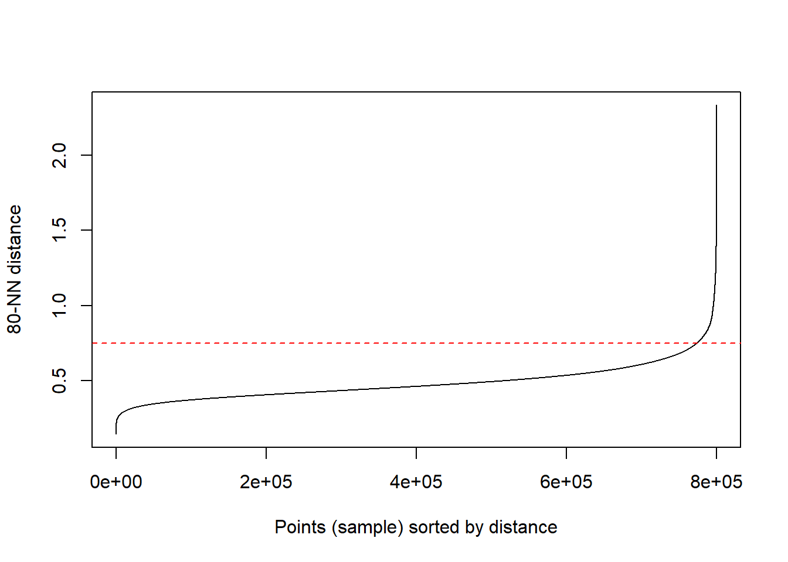
## integer(0)res <- dbscan(dat.scaled,eps =.75 ,minPts = 80)4.2 dimensionality Reduction Practices and Clustering
4.2.1 PCA
#In order to adjust the skewed distribution of the data set, I used min max scaler.
# apply PCA - scale. = TRUE is highly
# advisable, but default is FALSE.
lc.pca <- prcomp(dat.scaled)
plot(lc.pca, type = "l")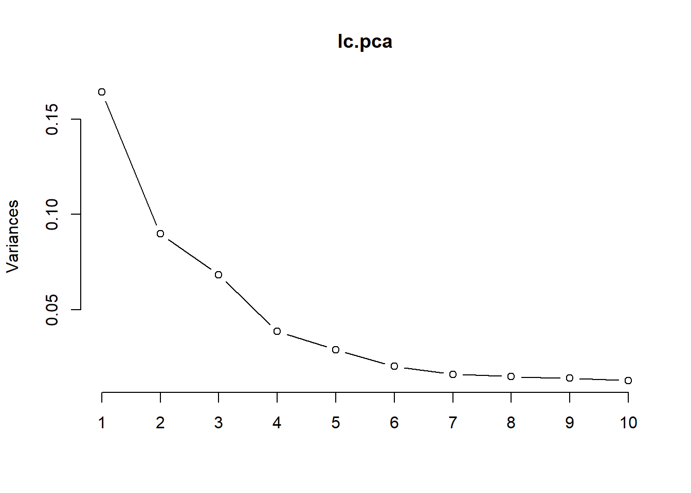
4.2.2 LLE
local linear embedding
library(lle)
#neighbours <- find_nn_k(dat.sample, k=15)
#weights <- find_weights(neighbours, dat.sample, m=2, reg=2)
dat <- as.matrix(dat.scaled)
k5 <- lle(dat, m=2, k=5, reg=2, ss=FALSE, id=TRUE, v=0.9)## finding neighbours
## calculating weights
## intrinsic dim: mean=3.8792, mode=4
## computing coordinates#k10 <- lle(dat.sample.lle, m=2, k=10, reg=2, ss=FALSE, id=TRUE, v=0.9)
#plot_lle(k5$Y, dat.sample, FALSE, col="red", inter=TRUE)
plot(k5$Y, main="K=5 data", xlab=expression(y[1]), ylab=expression(y[2]))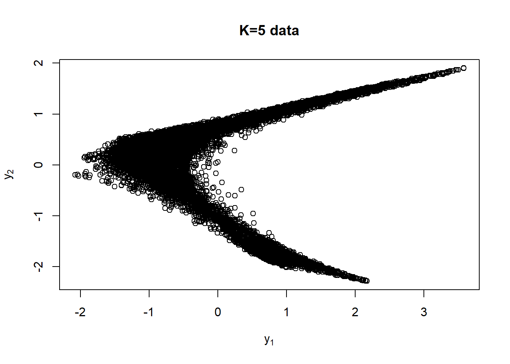
#plot(k10$Y, main="K=10 data", xlab=expression(y[1]), ylab=expression(y[2]))
#plot_lle(k10$Y, dat.sample, main="K=10 data",FALSE, col="red", inter=TRUE,xlab=expression(y[1]), ylab=expression(y[2]))4.2.3 MDS
MDS tries to maintain distances in high- and low-dimensional space, it has the advantage over PCA that arbitrary distance functions can be used, but it is computationally more demanding.
library(dimRed)
mds <- MDS()
dat <- dimRedData(dat.scaled)
### with meta information:
#dimRedData(iris[, 1:4], iris[, 5])
#mds@stdpars$ndim = 10
#emb.mds <- mds@fun(dat.sample.MDS, mds@stdpars)
## use embed():
emb2.mds <- embed(dat, "MDS", d = function(x) exp(stats::dist(x)),ndim = 10)
#plot(emb, type = "2vars",main = "emb")
plot(emb2.mds, type = "3vars",main = "emb2")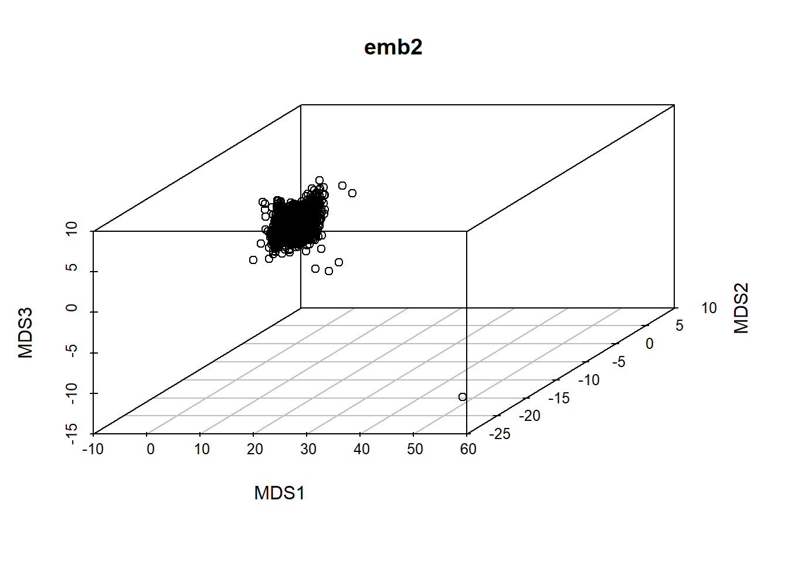
df.emb2.mds <- as.data.frame(emb2.mds, meta.prefix = "meta.", data.prefix = "")
saveRDS(df.emb2.mds,"df.emb2.mds.rds")4.2.4 isomap
set.seed(310)
#Get the unscaled the data set
samp <- sample(nrow(dat.cluster.p), size = 2000)
dat <- dimRedData(dat.cluster.p[,-1])
emb2 <- embed(dat[samp], "Isomap", mute = NULL, knn = 50, ndim =10)
emb3 <- emb2@apply(dat[-samp])
plot(emb2, type = "3vars")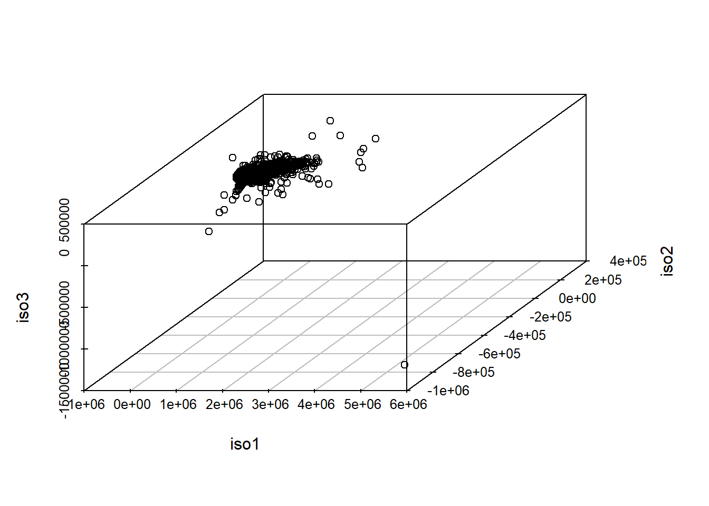
plot(emb3, type = "3vars")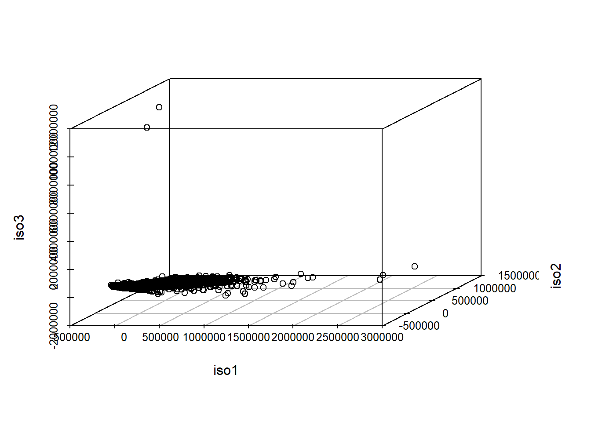
df.emb2 <- as.data.frame(emb2, meta.prefix = "meta.", data.prefix = "")
df.emb3 <- as.data.frame(emb3, meta.prefix = "meta.", data.prefix = "")
df.emb <- rbind(df.emb2[,1:10],df.emb3)
##Clustering on deminsion reduced data set
saveRDS(df.emb,"df.emb.rds")
kNNdistplot(df.emb,k=11)
res.iso <- dbscan(df.emb,eps =0.3e+6 ,minPts = 11)4.2.5 t-SNE
t-SNE,t-Distributed Stochastic Neighbor Embedding is a non-linear dimensionality reduction algorithm used for exploring high-dimensional data. It maps multi-dimensional data to two or more dimensions suitable for human observation.
set.seed(310)
require(Rtsne)
tsne_out <- Rtsne(as.matrix(dat.cluster.p[,-1]))
plot(tsne_out$Y)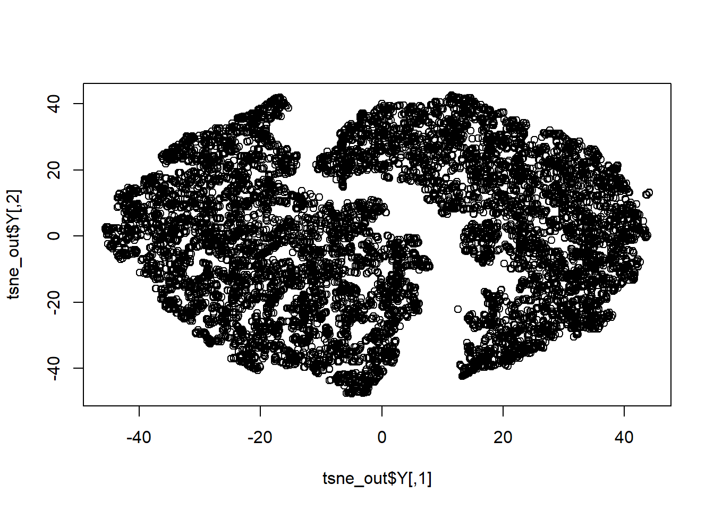
dat.tsne <- as.data.frame(tsne_out$Y)
kNNdistplot(dat.tsne,k=4)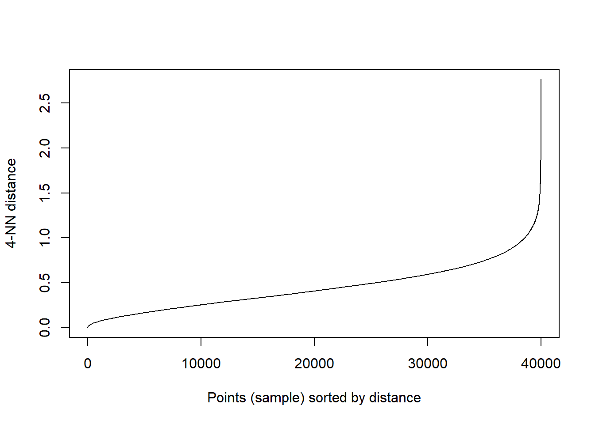
res.tsne <- dbscan(dat.tsne,eps =1.2 ,minPts = 4)Some use of clustering after dimension reduction includes using the results as a new feature to predict the final results.